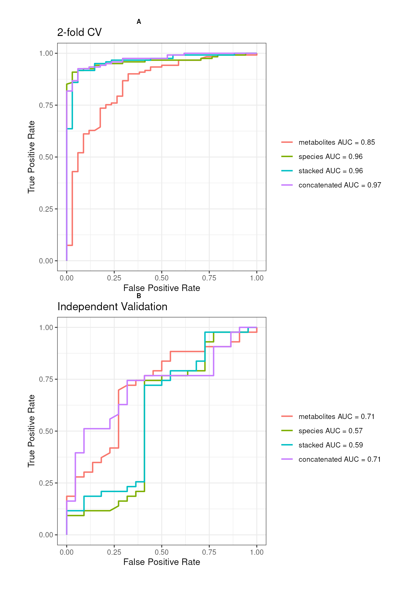
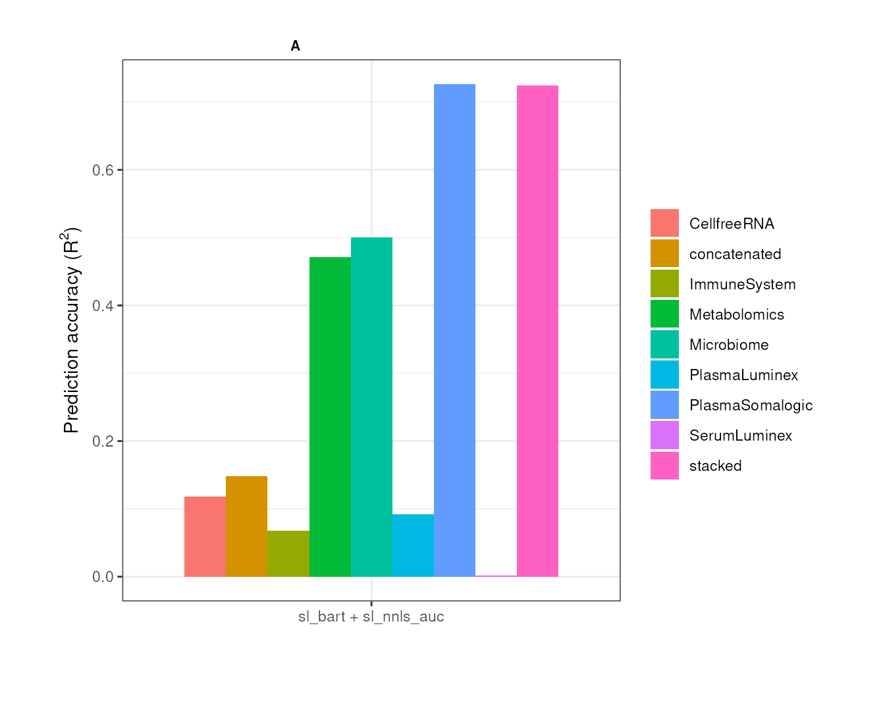
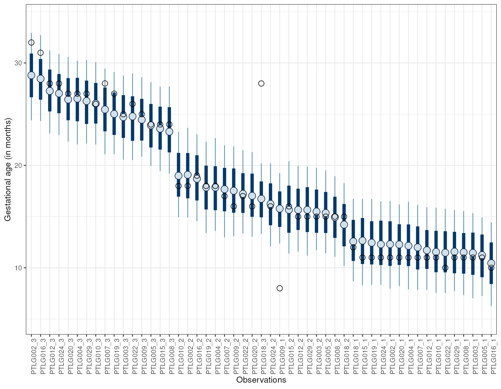
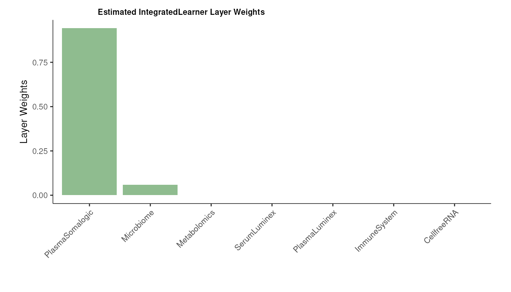
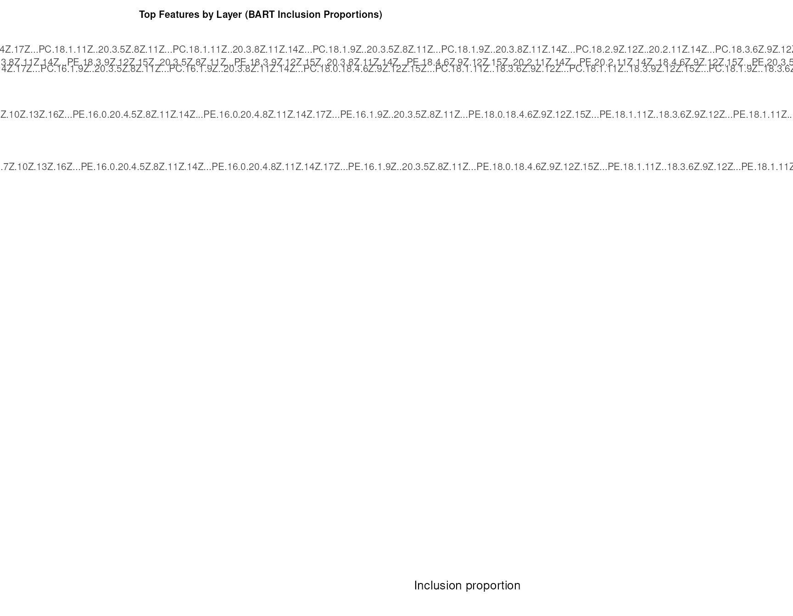
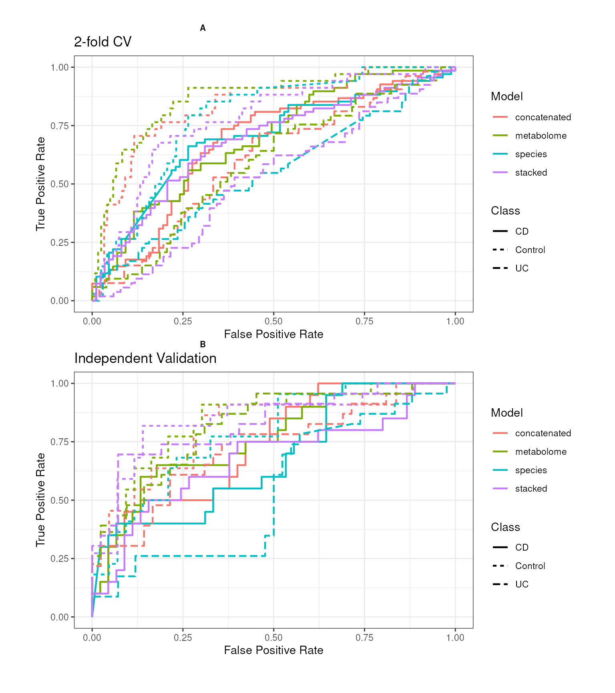
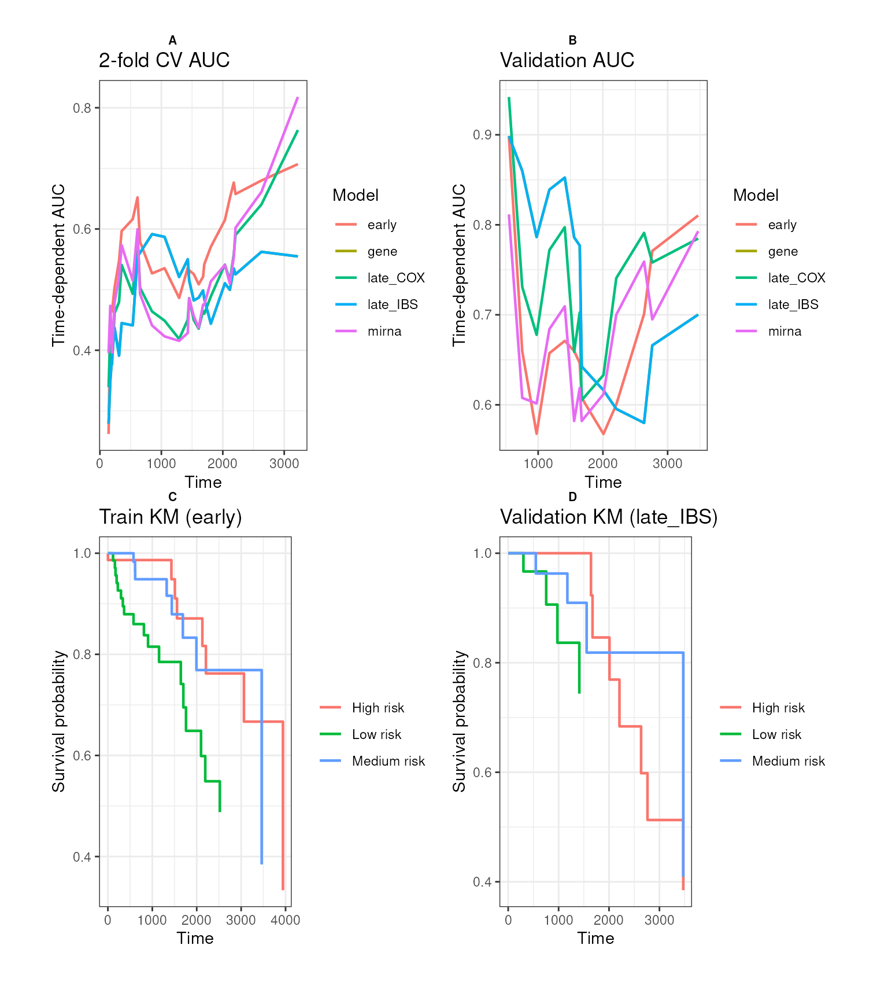

vignettes/IntegratedLearner.Rmd
IntegratedLearner.RmdThis vignette is a practical tutorial for binary, multiclass,
continuous, and survival outcome workflows in
IntegratedLearner.
The goal is to show a complete end-to-end pattern you can adapt to your own multi-omics study:
IntegratedLearner supports two integration
paradigms:
Optional feature selection workflow used in this vignette:
filter_method,
filter_pct) on training features.run_screening = TRUE,
screen_pct) in a fold-safe manner:
# Main package
library(IntegratedLearner)
# Tutorial dependencies
library(dplyr)
library(ggplot2)
library(SuperLearner)
library(caret)
library(cowplot)
library(bayesplot)
library(S4Vectors)
library(SummarizedExperiment)
library(MultiAssayExperiment)
library(survival)
if (use_sl_bart) {
library(bartMachine)
}For the PCL_* interface used in this tutorial, each
dataset is a list with:
feature_table: data frame with features in rows and
samples in columns.sample_metadata: data frame with samples in rows. Must
include:
subjectID).Y).feature_metadata: data frame with features in rows.
Must include:
featureID: unique feature identifier.featureType: layer label (for example, species,
metabolites).Required alignments:
rownames(feature_table) == rownames(feature_metadata)colnames(feature_table) == rownames(sample_metadata)If you provide a validation set, it must use the same feature set and ordering as training.
For survival workflows, include time and
event columns in sample_metadata (with
event coded as 0/1). You can also provide Y as
a Surv(time, event) object.
You can keep your own column names and map them in the wrapper:
fit <- IntegratedLearner(
PCL_train = pcl_train,
outcome_col = "disease_status",
subject_id_col = "participant_id",
family = stats::binomial()
)Automatic coercion in the wrapper:
family = gaussian(): outcome is coerced to numeric
(errors if conversion fails).family = binomial(): two classes are mapped
internally to {0,1}.family = binomial(): class labels are
retained.IntegratedLearner accepts
MultiAssayExperiment inputs through
MAE_train/MAE_valid. This is often the
cleanest path when each omics layer is already represented as a
SummarizedExperiment/TreeSummarizedExperiment.
library(curatedMetagenomicData)
# 1) Download two aligned layers from curatedMetagenomicData
asnicar_tax <- curatedMetagenomicData(
"DavidLA_2015.relative_abundance",
dryrun = FALSE
)[[1]]
asnicar_path <- curatedMetagenomicData(
"DavidLA_2015.pathway_abundance",
dryrun = FALSE
)[[1]]
tax_tse <- as(asnicar_tax, "TreeSummarizedExperiment")
path_tse <- as(asnicar_path, "TreeSummarizedExperiment")
# 2) Keep common samples in both layers
common_samples <- intersect(colnames(tax_tse), colnames(path_tse))
common_samples <- as.character(common_samples)
tax_tse <- tax_tse[, common_samples]
path_tse <- path_tse[, common_samples]
# 3) Build binary outcome and subject IDs inside each experiment
Yvec <- ifelse(as.character(colData(tax_tse)$disease) == "healthy", 0L, 1L)
SummarizedExperiment::colData(tax_tse)$Y <- Yvec
SummarizedExperiment::colData(path_tse)$Y <- Yvec
SummarizedExperiment::colData(tax_tse)$subjectID <- common_samples
SummarizedExperiment::colData(path_tse)$subjectID <- common_samples
# 4) Build top-level MAE colData
cd <- S4Vectors::DataFrame(
Y = as.integer(Yvec),
subjectID = common_samples,
row.names = common_samples
)
# 5) Build explicit sampleMap
smap <- S4Vectors::DataFrame(
assay = c(rep("taxonomy", length(common_samples)),
rep("pathway", length(common_samples))),
primary = c(common_samples, common_samples),
colname = c(common_samples, common_samples)
)
smap$assay <- as.character(smap$assay)
smap$primary <- as.character(smap$primary)
smap$colname <- as.character(smap$colname)
# 6) Build MAE container
mae <- MultiAssayExperiment(
experiments = ExperimentList(
taxonomy = tax_tse,
pathway = path_tse
),
colData = cd,
sampleMap = smap
)
# 7) Stratified train/validation split
y <- MultiAssayExperiment::colData(mae)$Y
names(y) <- rownames(MultiAssayExperiment::colData(mae))
set.seed(1)
i0 <- which(y == 0)
i1 <- which(y == 1)
train0 <- sample(i0, floor(0.7 * length(i0)))
train1 <- sample(i1, floor(0.7 * length(i1)))
train_ids <- names(y)[sort(c(train0, train1))]
valid_ids <- setdiff(names(y), train_ids)
mae_train <- mae[, train_ids]
mae_valid <- mae[, valid_ids]
# 8) Fit IntegratedLearner in MAE mode
fit_mae_bin <- IntegratedLearner(
MAE_train = mae_train,
MAE_valid = mae_valid,
experiment = c("taxonomy", "pathway"),
assay.type = c("relative_abundance", "pathway_abundance"),
folds = 2,
base_learner = "SL.randomForest",
meta_learner = "SL.nnls.auc",
filter_method = "prevalence",
filter_pct = 40,
run_screening = TRUE,
screen_pct = 30,
family = binomial(),
verbose = TRUE
)
# 10) Results
fit_mae_bin$AUC.train
fit_mae_bin$AUC.test
fit_mae_bin$weightsThe returned object is the same style as PCL mode, so
downstream interpretation (AUC.train,
R2.train, weights, plot.learner)
is unchanged.
IntegratedLearner)
| Parameter | Default | Applies to | Description |
|---|---|---|---|
MAE_train, MAE_valid
|
NULL |
all | MAE-mode inputs (training and optional validation). |
PCL_train, PCL_valid
|
NULL |
all | PCL-mode inputs (training and optional validation). |
experiment |
NULL |
MAE mode | Selected MAE experiment names/indices; defaults to all experiments. |
assay.type |
NULL |
MAE mode | Assay names per selected experiment. |
outcome_col |
"Y" |
all | Outcome column name in PCL sample_metadata / MAE
colData. |
subject_id_col |
"subjectID" |
all | Subject identifier column name in PCL sample_metadata /
MAE colData. |
na.rm |
FALSE |
all | Drop features with missing values after extraction/prep. |
folds |
5 |
all | Outer CV folds. |
seed |
1234 |
all | Reproducibility seed. |
base_learner |
"SL.BART" |
all | Base learner. Use SL.* IDs for continuous/binary,
native multiclass IDs (for example randomforest,
xgboost, mbart) for multiclass, and explicitly
set a supported surv.* ID for survival runs. |
filter_method |
NULL |
all | Optional feature filtering method: "prevalence" or
"variance". |
filter_pct |
NULL |
all | Optional retention percentage in (0,100] for
filtering. |
run_screening |
FALSE |
all | Enable supervised screening. |
screen_pct |
NULL |
all | Retention percentage in (0,100] for screening. Required
when screening is enabled. |
prevalence_pct |
NULL |
all | Deprecated alias for prevalence filtering
(filter_method = "prevalence"). |
drop_poor_performing_layers |
FALSE |
continuous, binary, survival | If TRUE, removes layers with poor single-layer
performance from early and late fusion only (AUC < 0.5 for binary, R²
< 0.5 for continuous, C-index < 0.5 for survival). Single-layer
results are still retained. |
verbose |
FALSE |
all | Print progress. |
family |
gaussian() |
all | Non-survival: gaussian()/binomial().
Multiclass is auto-detected when family = binomial() and
outcome has more than two classes. Survival is auto-detected from
metadata or family. |
... |
— | all | Passed to the selected backend (IL_conbin or
ILsurv). |
| Parameter | Default | Description |
|---|---|---|
base_screener |
"All" |
Deprecated compatibility parameter. Prefer
run_screening + screen_pct. |
meta_learner |
"SL.nnls.auc" |
Stacked meta learner for late fusion. |
run_stacked |
TRUE |
Enables late-fusion stacked model. |
run_concat |
TRUE |
Enables early-fusion concatenated model. |
print_learner |
TRUE |
Prints fit summary. |
refit.stack |
FALSE |
Refit stacked learner on full data for final predictions. |
| Parameter | Default | Description |
|---|---|---|
base_learner |
"glmnet" |
Native multiclass learner per layer and for concatenated fit.
Supported: glmnet, randomforest,
ranger, xgboost, mbart,
multinom. |
meta_learner |
"glmnet" |
Native multiclass learner used for stacked fusion. |
base_screener |
"All" |
Deprecated compatibility parameter. Prefer
run_screening + screen_pct. |
run_stacked |
TRUE |
Enables late-fusion stacked multiclass model. |
run_concat |
TRUE |
Enables early-fusion concatenated multiclass model. |
folds |
5 |
Subject-level CV folds for OOF multiclass probabilities. |
run_screening, screen_pct
|
FALSE, NULL
|
Fold-safe multiclass screening (glmnet-based) after optional filtering. |
...)
| Parameter | Default | Description |
|---|---|---|
do_early_fusion |
TRUE |
Train an early-fusion survival model on all features. |
weight_method |
"IBS" |
Late-fusion weighting objective ("IBS" or
"COX"). |
t_vec, t_vec_probs
|
NULL, quantiles |
Time grid used in COX-style weighting summaries. |
layer_score |
"sum" |
Aggregation of cumulative hazard increments (sum,
mean, l2). |
weight_lambda |
0.02 |
Regularization strength for COX weighting optimizer. |
weight_penalty |
"l2_to_uniform" or "entropy"
|
Penalty used while learning survival late-fusion weights. |
weight_cap |
1.0 |
Optional cap on individual layer weights. |
optim_maxit_cox |
4000 |
Max iterations for COX weighting optimization. |
optim_maxit_ibs |
300 |
Max iterations for IBS weighting optimization. |
ibs_shrink_to_uniform |
0 |
Shrink IBS weights toward uniform blend. |
| Path | Supported base models |
|---|---|
Continuous/Binary (IL_conbin) |
Any SuperLearner-compatible SL.* learner
available in your R session. Package wrappers include:
SL.BART, SL.LASSO, SL.enet,
SL.glmnet2, SL.horseshoe,
SL.mxBART (plus standard SuperLearner learners such as
SL.glm, SL.randomForest, etc.). |
Multiclass (IL_multiclass) |
Native multiclass learner IDs: glmnet,
randomforest, ranger, xgboost,
mbart, multinom. |
Survival (ILsurv) |
Built-in survival learner IDs: surv.coxph,
surv.glmnet, surv.ranger,
surv.ranger.extratrees, surv.ranger.maxstat,
surv.ranger.C, surv.rfsrc,
surv.coxboost, surv.gbm,
surv.xgboost.cox, surv.xgboost.aft,
surv.mboost, surv.bart. |
| Path | Single-layer | Early fusion | Late fusion |
|---|---|---|---|
| Continuous/Binary | Yes | run_concat = TRUE |
run_stacked = TRUE with meta_learner
|
| Multiclass | Yes | run_concat = TRUE |
run_stacked = TRUE with native multiclass
meta_learner
|
| Survival | Yes (train_out$single) |
do_early_fusion = TRUE |
Weighted layer blending (weight_method = "IBS" or
"COX") |
This section summarizes the outputs produced by each integration method and where to find weights/importance values.
| Method | What it returns | Where to access |
|---|---|---|
| Single-layer (per omics layer) | Layer-specific predictions and metrics |
fit$yhat.train[, layer_name],
fit$yhat.test[, layer_name] (if validation),
fit$AUC.train / fit$AUC.test,
fit$accuracy.train / fit$accuracy.test,
fit$balanced_accuracy.train /
fit$balanced_accuracy.test (binomial),
fit$R2.train / fit$R2.test (gaussian) |
| Early fusion (concatenated) | One model on all features concatenated | Enable with run_concat = TRUE; outputs in
fit$yhat.train[, "concatenated"],
fit$model_fits$model_concat,
fit$SL_fits$SL_fit_concat
|
| Late fusion (stacked) | Meta-model over layer-level predictions | Enable with run_stacked = TRUE; outputs in
fit$yhat.train[, "stacked"],
fit$model_fits$model_stacked,
fit$SL_fits$SL_fit_stacked
|
| Layer weights (stacked) | Relative contribution of each layer in late fusion |
fit$weights (available when
meta_learner = "SL.nnls.auc" and
run_stacked = TRUE) |
| Binary metric table | Per-model AUC, accuracy, and balanced accuracy |
fit$metrics.train and fit$metrics.test (if
validation provided) |
| Method | What it returns | Where to access |
|---|---|---|
| Single-layer (per omics layer) | Layer-wise multiclass probability and class predictions |
fit$prob.train[[layer_name]],
fit$class.train[, layer_name], plus validation analogs
fit$prob.test[[layer_name]],
fit$class.test[, layer_name]
|
| Early fusion (concatenated) | One multiclass model on concatenated features | Enable with run_concat = TRUE; outputs in
fit$prob.train$concatenated,
fit$class.train[, "concatenated"],
fit$model_fits$model_concat
|
| Late fusion (stacked) | Multiclass meta-model over OOF layer probabilities | Enable with run_stacked = TRUE; outputs in
fit$prob.train$stacked,
fit$class.train[, "stacked"],
fit$model_fits$model_stacked
|
| Multiclass performance metrics | Accuracy, balanced accuracy, one-vs-rest AUC, and log-loss |
fit$metrics.train and fit$metrics.test (if
validation provided) |
| Feature-selection metadata | Filtering/screening settings used in fit |
fit$filter_method, fit$filter_pct,
fit$prevalence_pct, fit$screening_used,
fit$screen_method, fit$screen_pct
|
| Screened feature sets | Features retained by fold-safe screening |
fit$selected_features_by_layer,
fit$selected_features_concat
|
| Method | Training outputs | Validation outputs |
|---|---|---|
| Single-layer |
fit$train_out$single$metrics,
fit$train_out$single$train_risk
|
fit$valid_out$single$valid_cindex,
fit$valid_out$single$valid_auc,
fit$valid_out$single$valid_risk
|
| Early fusion |
fit$train_out$early$train_cindex,
fit$train_out$early$train_auc,
fit$train_out$early$train_risk
|
fit$valid_out$early$valid_cindex,
fit$valid_out$early$valid_auc,
fit$valid_out$early$valid_risk
|
| Late fusion |
fit$train_out$late$weights,
fit$train_out$late$train_cindex,
fit$train_out$late$train_auc,
fit$train_out$late$train_risk
|
fit$valid_out$late$valid_cindex,
fit$valid_out$late$valid_auc,
fit$valid_out$late$valid_risk
|
| Survival plotting payload | fit$surv_plot_data$train |
fit$surv_plot_data$valid |
| Importance type | Where to access | Notes |
|---|---|---|
| Conbin signed global feature importance | fit$feature_importance_signed |
Always returned for non-survival fits; named numeric vector sorted by effect magnitude/sign. |
| Conbin signed per-layer importance | fit$feature_importance_signed_by_layer |
List split by featureType. |
| Multiclass signed global feature importance | fit$feature_importance_global |
Global score aggregated across multiclass contrasts. |
| Multiclass signed importance by class | fit$feature_importance_signed_by_class |
List with one signed vector per class. |
| Multiclass signed importance by layer and class | fit$feature_importance_signed_by_layer_by_class |
Nested list by layer then class. |
| Survival early-fusion combined importance | fit$train_out$early$combined_importance |
Available when do_early_fusion = TRUE. |
| Survival late-fusion combined importance | fit$train_out$late$combined_importance |
Weighted signed importance; names are prefixed like
layer::feature. |
| BART-specific layer importance (optional) | bartMachine::investigate_var_importance(fit$model_fits$model_layers[[layer]], plot = FALSE) |
Only for BART-based conbin fits
(base_learner = "SL.BART"). |
# ---- Conbin: weights + top features ----
fit$weights
head(fit$feature_importance_signed, 20)
names(fit$feature_importance_signed_by_layer)
head(fit$feature_importance_signed_by_layer[[1]], 20)
# ---- Multiclass: metrics + class probabilities + importance ----
fit_mc$metrics.train
fit_mc$metrics.test
head(fit_mc$class.train)
head(fit_mc$class.test)
head(fit_mc$prob.train$stacked)
head(fit_mc$feature_importance_global, 20)
head(fit_mc$feature_importance_signed_by_class[[1]], 20)
# ---- Survival: late-fusion weights + top combined features ----
fit_surv$train_out$late$weights
head(fit_surv$train_out$late$combined_importance, 20)
# ---- Survival: inspect all fusion branches ----
fit_surv$train_out$single
fit_surv$train_out$early
fit_surv$train_out$lateThis section uses the PRISM dataset (Franzosa et al., 2019) for
classifying IBD status. In these fixtures the binary target is in
sample_metadata$Y (default outcome_col
behavior).
# Training data
load_il_dataset("PRISM", envir = environment())
pcl <- PRISM
feature_table <- pcl$feature_table
sample_metadata <- pcl$sample_metadata
feature_metadata <- pcl$feature_metadata
rm(pcl)
# Quick checks
head(feature_table[1:5, 1:5])
#> G35127 G35128 G35152 G36347
#> Granulicella_unclassified -0.05253649 -0.05127158 -0.06133085 0.004887447
#> Actinomyces_graevenitzii 1.04668500 -1.32629194 -1.51654615 -3.247989324
#> Actinomyces_johnsonii -0.70327678 -0.41575776 -0.29326475 -0.314361595
#> Actinomyces_massiliensis -0.56808952 0.14722099 0.05660884 -1.077235688
#> Actinomyces_naeslundii -0.49546119 -0.15921604 -0.03146485 -0.354377267
#> G36348
#> Granulicella_unclassified -0.006164066
#> Actinomyces_graevenitzii -0.717183019
#> Actinomyces_johnsonii -0.340485318
#> Actinomyces_massiliensis -0.159240362
#> Actinomyces_naeslundii -0.139758576
head(sample_metadata[1:5, ])
#> Diagnosis dysbiosis_score Y subjectID
#> G35127 CD 0.9341207 1 G35127
#> G35128 CD 0.5962602 1 G35128
#> G35152 CD 0.9505732 1 G35152
#> G36347 CD 0.9966957 1 G36347
#> G36348 CD 0.8475403 1 G36348
head(feature_metadata[1:5, ])
#> featureID featureType
#> Granulicella_unclassified Granulicella_unclassified species
#> Actinomyces_graevenitzii Actinomyces_graevenitzii species
#> Actinomyces_johnsonii Actinomyces_johnsonii species
#> Actinomyces_massiliensis Actinomyces_massiliensis species
#> Actinomyces_naeslundii Actinomyces_naeslundii species
table(feature_metadata$featureType)
#>
#> metabolites species
#> 1500 340
table(sample_metadata$Y)
#>
#> 0 1
#> 34 121
all(rownames(feature_table) == rownames(feature_metadata))
#> [1] TRUE
all(colnames(feature_table) == rownames(sample_metadata))
#> [1] TRUE
# Independent validation data
load_il_dataset("NLIBD", envir = environment())
pcl <- NLIBD
feature_table_valid <- pcl$feature_table
sample_metadata_valid <- pcl$sample_metadata
rm(pcl)
# Align validation features to training feature set/order (required by IntegratedLearner)
if (!identical(rownames(feature_table), rownames(feature_table_valid))) {
missing_in_valid <- setdiff(rownames(feature_table), rownames(feature_table_valid))
if (length(missing_in_valid) > 0) {
stop("Validation set is missing training features, e.g.: ", paste(head(missing_in_valid, 5), collapse = ", "))
}
feature_table_valid <- feature_table_valid[rownames(feature_table), , drop = FALSE]
}
all(rownames(feature_table) == rownames(feature_table_valid))
#> [1] TRUE
all(colnames(feature_table_valid) == rownames(sample_metadata_valid))
#> [1] TRUEIntegratedLearner fits one model per layer
(base_learner) and then combines layer-level predictions
with a meta-learner (meta_learner).
fit <- IntegratedLearner(
PCL_train = PCL_train,
PCL_valid = PCL_valid,
folds = 2,
base_learner = "SL.randomForest",
meta_learner = "SL.nnls.auc",
filter_method = "prevalence",
filter_pct = 40,
run_screening = TRUE,
screen_pct = 30,
verbose = TRUE,
family = binomial()
)
#> Feature filter (prevalence ranking, top 40.00% per layer): kept 736/1840 features. Layer breakdown: species=136/340, metabolites=600/1500.
#> Running base model for layer 1...
#> Number of covariates in screen.il.glmnet is: 180
#> CV SL.randomForest_screen.il.glmnet
#> Number of covariates in screen.il.glmnet is: 180
#> CV SL.randomForest_screen.il.glmnet
#> Non-Negative least squares convergence: TRUE
#> full SL.randomForest_screen.il.glmnet
#> Running base model for layer 2...
#> Number of covariates in screen.il.glmnet is: 41
#> CV SL.randomForest_screen.il.glmnet
#> Number of covariates in screen.il.glmnet is: 41
#> CV SL.randomForest_screen.il.glmnet
#> Non-Negative least squares convergence: TRUE
#> full SL.randomForest_screen.il.glmnet
#> Running stacked model...
#> Number of covariates in All is: 2
#> CV SL.nnls.auc_All
#> Number of covariates in All is: 2
#> CV SL.nnls.auc_All
#> Non-Negative least squares convergence: TRUE
#> full SL.nnls.auc_All
#> Running concatenated model...
#> Number of covariates in screen.il.glmnet is: 221
#> CV SL.randomForest_screen.il.glmnet
#> Number of covariates in screen.il.glmnet is: 221
#> CV SL.randomForest_screen.il.glmnet
#> Non-Negative least squares convergence: TRUE
#> full SL.randomForest_screen.il.glmnet
#> Time for model fit : 0.09 minutes
#> ========================================
#> Model fit for individual layers: SL.randomForest
#> Model fit for stacked layer: SL.nnls.auc
#> Model fit for concatenated layer: SL.randomForest
#> ========================================
#> AUC metric for training data:
#> Individual layers:
#> metabolites species
#> 0.845 0.961
#> ======================
#> Stacked model:0.963
#> ======================
#> Concatenated model:0.966
#> ======================
#> ========================================
#> AUC metric for test data:
#> Individual layers:
#> metabolites species
#> 0.742 0.566
#> ======================
#> Stacked model:0.612
#> ======================
#> Concatenated model:0.698
#> ======================
#> ========================================
#> Weights for individual layers predictions in IntegratedLearner:
#> metabolites species
#> 0.222 0.778
#> ========================================Core outputs for binary tasks include:
fit$AUC.train and fit$AUC.test: AUC per
layer and fusion model.fit$accuracy.train and fit$accuracy.test:
thresholded accuracy per layer and fusion model.fit$balanced_accuracy.train and
fit$balanced_accuracy.test: balanced accuracy per layer and
fusion model.fit$metrics.train and fit$metrics.test:
compact metric tables with AUC, accuracy, and balanced accuracy.fit$weights: layer contributions in the stacked model
(when SL.nnls.auc is used).fit$yhat.train and fit$yhat.test:
predicted probabilities.
fit$AUC.train
#> metabolites species stacked concatenated
#> 0.845 0.961 0.963 0.966
fit$AUC.test
#> metabolites species stacked concatenated
#> 0.742 0.566 0.612 0.698
fit$accuracy.train
#> metabolites species stacked concatenated
#> 0.8322581 0.9096774 0.9161290 0.9032258
fit$balanced_accuracy.train
#> metabolites species stacked concatenated
#> 0.6387944 0.8575596 0.8616918 0.8534273
fit$metrics.test
#> model auc accuracy balanced_accuracy
#> 1 metabolites 0.742 0.6461538 0.4883721
#> 2 species 0.566 0.6923077 0.5787526
#> 3 stacked 0.612 0.6923077 0.5565539
#> 4 concatenated 0.698 0.6615385 0.5000000
fit$weights
#> metabolites species
#> 0.2216494 0.7783506Plot ROC summaries for train and validation sets:
plot.obj <- IntegratedLearner:::plot.learner(fit)
plot.obj$plot
In this PRISM setting, you can compare which single layer is strongest and whether stacked fusion outperforms both individual layers and simple concatenation.
This section uses the pregnancy dataset (Ghaemi et al., 2019), where
Y is continuous gestational age (default
outcome_col behavior).
load_il_dataset("pregnancy", envir = environment())
pcl <- pregnancy
feature_table <- pcl$feature_table
sample_metadata <- pcl$sample_metadata
feature_metadata <- pcl$feature_metadata
rm(pcl)
head(feature_table[1:5, 1:5])
#> PTLG002_1 PTLG003_1 PTLG004_1 PTLG005_1 PTLG007_1
#> CEP135 28.21785 54.56723 53.776824 15.26909 11.04831
#> MIIP 10.10756 17.11006 4.336841 0.00000 19.88695
#> GNL3 45.25968 58.26670 56.378929 70.23780 64.08018
#> CEP70 79.09550 67.97782 93.675759 128.26033 66.28985
#> TIMP1 172.23675 121.62018 183.014677 247.35921 304.93329
head(sample_metadata[1:5, ])
#> Y subjectID
#> PTLG002_1 11 PTLG002
#> PTLG003_1 11 PTLG003
#> PTLG004_1 11 PTLG004
#> PTLG005_1 11 PTLG005
#> PTLG007_1 11 PTLG007
head(feature_metadata[1:5, ])
#> featureID featureType
#> CEP135 CEP135 CellfreeRNA
#> MIIP MIIP CellfreeRNA
#> GNL3 GNL3 CellfreeRNA
#> CEP70 CEP70 CellfreeRNA
#> TIMP1 TIMP1 CellfreeRNA
table(feature_metadata$featureType)
#>
#> CellfreeRNA ImmuneSystem Metabolomics Microbiome PlasmaLuminex
#> 9084 264 253 259 31
#> PlasmaSomalogic SerumLuminex
#> 650 31
length(unique(sample_metadata$subjectID))
#> [1] 17
all(rownames(feature_table) == rownames(feature_metadata))
#> [1] TRUE
all(colnames(feature_table) == rownames(sample_metadata))
#> [1] TRUE
# Optional speed-up for local experimentation
# top_n <- 50
# subsetIDs <- c(1:top_n, (nrow(feature_table) - top_n + 1):nrow(feature_table))
# feature_table <- feature_table[subsetIDs, ]
# feature_metadata <- feature_metadata[subsetIDs, ]
PCL_train <- list(
feature_table = feature_table,
sample_metadata = sample_metadata,
feature_metadata = feature_metadata
)For this example, we use BART base learners
(SL.BART).
If you hit:
java.lang.UnsupportedClassVersionError ... class file version 65.0 ... recognizes up to 61.0
your Java runtime is older than the version used by your installed
bartMachine build (typically Java 17 runtime vs Java 21
bytecode). In that case, either:
fit <- IntegratedLearner(
PCL_train = PCL_train,
folds = 2,
base_learner = "SL.BART",
meta_learner = "SL.nnls.auc",
filter_method = "variance",
filter_pct = 40,
run_screening = TRUE,
screen_pct = 30,
family = gaussian()
)
#> Time for model fit : 0.512 minutes
#> ========================================
#> Model fit for individual layers: SL.BART
#> Model fit for stacked layer: SL.nnls.auc
#> Model fit for concatenated layer: SL.BART
#> ========================================
#> R^2 for training data:
#> Individual layers:
#> CellfreeRNA ImmuneSystem Metabolomics Microbiome PlasmaLuminex
#> 0.095426974 0.048755007 0.447133256 0.450236277 0.113616776
#> PlasmaSomalogic SerumLuminex
#> 0.722966170 0.003965187
#> ======================
#> Stacked model:0.7166626
#> ======================
#> Concatenated model:0.1764758
#> ======================
#> ========================================
#> Weights for individual layers predictions in IntegratedLearner:
#> CellfreeRNA ImmuneSystem Metabolomics Microbiome PlasmaLuminex
#> 0.000 0.000 0.000 0.017 0.000
#> PlasmaSomalogic SerumLuminex
#> 0.983 0.000
#> ========================================Fallback (non-Java) run:
fit <- IntegratedLearner(
PCL_train = PCL_train,
folds = 2,
base_learner = "SL.randomForest",
meta_learner = "SL.nnls.auc",
filter_method = "variance",
filter_pct = 40,
run_screening = TRUE,
screen_pct = 30,
family = gaussian()
)For continuous outcomes, IntegratedLearner reports
R2.train (and R2.test if validation is
provided).
fit$R2.train
#> CellfreeRNA ImmuneSystem Metabolomics Microbiome PlasmaLuminex
#> 0.095426974 0.048755007 0.447133256 0.450236277 0.113616776
#> PlasmaSomalogic SerumLuminex stacked concatenated
#> 0.722966170 0.003965187 0.716662576 0.176475837
plot.obj <- IntegratedLearner:::plot.learner(fit)
plot.obj$plot
When using SL.BART, you can inspect posterior predictive
distributions and derive weighted posterior summaries.
weights <- fit$weights
dataX <- fit$X_train_layers
dataY <- fit$Y_train
post.samples <- vector("list", length(weights))
names(post.samples) <- names(dataX)
for (i in seq_along(post.samples)) {
post.samples[[i]] <- bartMachine::bart_machine_get_posterior(
fit$model_fits$model_layers[[i]],
dataX[[i]]
)$y_hat_posterior_samples
}
#> Warning in pre_process_new_data(clean_data, bart_machine): The following features were found in records for prediction which were not found in the original training data:
#> SSH2, GRB2, AP1S2, HADHA, PARP14, FAM129A, NCK2, HLA.DRA, ARPC5, PRKACB, SIAH2, DAP, STRADB, RPL7AP6, CDC37, SEC14L1, EIF3K, PTEN, DOCK11, CDC42SE1, SYK, TIMP1, IGF2BP3, PSAP, LUC7L3, PARP1, HNRNPR, ABTB1, RNA5SP370, NFATC2, MBP, CBX3, KIF1C, HNRNPH3, LARP1, RNA5SP74, BAZ1A, POLDIP2, LIMD2, SHOC2, AURKAIP1, PRPF6, HLA.DPB1, WAS, QARS, JUND, ANP32E, HINT1, GSN, CLTC, KLF2, RAB10, TBCA, CEBPD, PHF3, CHCHD2, NFKB2, H3F3A, BAZ2A, IQGAP2, HOOK3, CTSB, LCN2, RNA5SP368, RBBP4, ITSN2, EIF3F, ZNF385A, UIMC1, LBH, TAX1BP1, DTX3L, NUP155, APC, DENND4A, RASA3, KLF6, AP3S1, SNHG5, ARL6IP5, N4BP2L2, ANXA11, RP11.475C16.1, UBQLN1, NCOA3, HIST1H2BD, NLRC5, NIN, UQCRC1, MYD88, COL1A2, HERC1, MCUR1, RPS27L, SASH3, NDST1, HBD, ZNF106, ZNF154, LPCAT3, CLCN3, ZNF747, ARID2, CTRC, LIG1, CCDC181, ADRA2B, RP11.319G6.1, SUMO2, RP11.89H19.1, ATP6V1F, DUX4L26, EME1, SP110, ABCA3, ATXN3, ABI1, LURAP1L, CTA.212A2.3, SYNPO2, PRPF40A, XPO1, CNTROB, PCM1, RP11.255B23.1, UQCC2, EEF1A1P6, FBRS, NEMF, GATAD2A, ZCCHC9, CALD1, AIM2, STK24, ATP5G2, RUNX1T1, RPL23AP74, TOMM7, PECAM1, NDUFS3, EIF4H, ELK4, TMCC1, ZNF271P, UBAP2L, APOL6, RPL39P3, ILF3, POLR3G, BTG1, EHD1, FAM107A, RPL10P3, GABARAP, CUL4A, CST3, UBXN6, SSH1, NOP56, MAP3K1, QKI, RNU1.13P, X5.Sep, TSEN15, ARHGAP25, TPT1P4, SCARNA13, TBL1XR1, STAT3, HECTD4, DDX11L10, TREML1, WHSC1L1, MAP3K5, IMPDH2, GUCY1B3, TRIM22, MORF4L1, RYBP, RNU1.89P, UBE2L6, PRRC2B, BAG1, AC074289.1, X2.Sep, HMGA1, AFF1, GLS, FRMD4B, SPX, ILK, CSNK1G1, MTCO3P12, FBXO9, ACRBP, CAPN15, CTNNBL1, RNA5SP325, DYSF, RAB2B, PPP1CA, TPI1, C11orf58, APLF, ERG, EIF5, SUPT16H, MAP4, DYNC1H1, ACVR2A, RN7SL493P, MAF1, PTK2B, AP2B1, CHD6, GMFG, SRSF6, CSNK1A1, GNA13, RALY, PIM1, SUSD1, RNU5B.1, SMC1A, COMMD6, BTK, ASH1L, ABCC3, JAK2, CANX, RPL23AP7, ISCA1, ANXA5, SIN3A, TMEM40, UHMK1, NET1, VAPB, RAC1, MLH3, XRCC6, PLEKHA2, AP2A1, EPS15, RPS11P5, BAZ1B, HDAC5, SLC44A2, RPL10AP6, SNORD89, EPSTI1, DCUN1D1, PDS5A, MLX, CAPN1, USP9X, USP34, DNM2, YPEL3, GNAQ, HIST1H4C, TCF25, TMOD3, KIAA0930, CALCOCO2, EFCAB13, PTPN11, SUPT6H, MAP7D1, CD300E, DBNL, ARHGAP10, NUDT3, WDFY4, PRELID1, THOC2, BASP1, EIF4EBP2, GRINA, SQSTM1, SRSF11, PARK7, NCOA2, HCK, MTND1P23, CENPF, RBMX, USP7, COX6B1, GRK6, MPEG1, OGFR, ZFP36L2, VTI1B, PPP4C, COL6A3, ASH2L, FGR, ASCC2, SDCBP, ATP2A3, ADRBK2, HLA.DPA1, CAT, PPIG, SYNE1, BECN1, RREB1, ABCC4, UBALD2, ARL8B, FAM101B, HIGD1A, SEC31A, MINK1, SLC25A3, RAB37, TBCEL, MIER1, JAK3, PDCD10, FURIN, RBM3, SSFA2, MKNK2, FAM104A, PLCB2, TNFAIP2, GCA, ETFA, APBB1IP, MTND5P11, STK40, DNAJB6, ZFR, KHDRBS1, SRCAP, SNRNP200, C19orf53, DPYSL2, RNF111, AGO2, UACA, RANBP9, CNTRL, JMJD1C, GPBP1L1, ARHGAP26, FLII, CLIC1, SMG1, STAT6, UBTF, DOCK10, H2AFY, PNN, SP1, C12orf75, EEF1B2P3, DAAM1, MCTP1, BNIP2, DNTTIP2, PRPF8, FCER1G, SUPT5H, HLA.C, NRDC, H1F0, SNRPC, ATP5D, MPZ, CSNK1G3, LYST, COX6C, H1FX, RMND5A, CASP1, UBLCP1, TAB2, PLCG1, GRK5, GIT2, CREB3, SNORA14B, POLR1D, SYF2, CHMP2A, PSME2, LDHA, RABEP1, GLRX5, RN7SL381P, RIC8A, SMOX, RUNX1, WDR60, STAU1, PITPNM1, DBI, ZNF438, TUBB4B, ZNF699, GIMAP6, CALR, ZDHHC14, COX14, PHRF1, NFIL3, ZFP36, SYNCRIP, SERP1, RNF144A.AS1, PSD4, DENND3, DNAJC2, NUP214, HEMK1, S100A12, ARID4B, PABPC4, CAB39, AP003068.23, G3BP2, EIF4G1, ARHGAP17, ABI3, NBPF15, METAP2, PRKDC, SH3TC1, KDM7A, PTBP3, CCT3, NAA60, PKN1, BIRC6, PPP1R15A, SLA, ITGB2, RAP1A, ELOVL7, SENP6, BLOC1S6, ATXN2, VCAN, RAB11FIP1, NCF1, ARPP19, IDH2, CTNNA1, RASGRP2, GP9, PLXDC2, ANXA3, C9orf16, SAFB2, ACAP2, PIK3C3, CELF2, RPL36A, ZBTB20, OAS1, MAP2K2, FAM120A, HGS, HCFC1, EIF4E2, ATP5A1, MFN2, TBC1D1, AGO1, CCDC88C, GNB2, PSIP1, VAMP3, UBE2B, GMPR, LRRFIP2, CCNY, RPL7AP30, FOXP1, ZCCHC6, G6PD, SLK, FAM192A, GOLGB1, PPP1R12C, ZER1, ABLIM1, HSPA4, FBL, BCL6, RSF1, KCTD12, NFAT5, RBM8A, DDX46, FKBP5, PIK3CD, DGKD, SMAD2, ATG3, CTSG, EIF4E, EHD3, PA2G4, HIST1H1B, ZFAS1, EXOC6B, ROCK2, TLE3, SNHG9, SBNO1, RAB8B, CTDSP2, YLPM1, LGALS1, CLIC4, WAPL, MGAT4B, RP11.832N8.1, PPP2CA, CST7, CCNDBP1, TAF3, HECA, MGEA5, MTCO2P12, KCTD20, ARID1B, C7orf73, RPL23AP2, CCT2, RBM5, SRSF4, DCK, ZNF609, MRPL48, PTK2, MYO18A, FCHSD2, RTCA, EPB41L2, CIC, TANK, LEF1, USP25, TMEM140, C1orf162, ANKRD44, RN7SL7P, DRAP1, KDM5A, IRF8, WDR44, NOLC1, VPS37B, MTCO1P40, HIST1H2AG, RN7SL630P, RPS19P1, UBR4, AZIN1, RPS15AP1, HNRNPA1P48, PRDM2, SLC2A4RG, PHB2, PIK3R1, CIZ1, RTF1, CTB.63M22.1, TRRAP, RNU6ATAC2P, ITFG2, GOLGA4, MTRNR2L9, UBASH3B, DYRK1A, PHF11, NDUFB9, PHF14, ATP5B, MKL1, TMOD1, STARD7, ARHGEF2, RERE, HIST1H2AL, LGALSL, CLINT1, EIF3I, NFIX, PDAP1, VPS13C, CASC4, CARD11, SNIP1, RCAN3, PGK1, NFE2, ACLY, SORL1, CPEB4, NECAP2, MKI67, ZNF91, USP15, LDHB, BICD2, SC22CB.1E7.1, UBE2J1, XRN2, FAM32A, PRCC, TRAM1, RAB4A, G3BP1, TNRC6B, KIAA0513, NFATC3, BBX, GOLIM4, BIRC3, CSNK1G2, TCF3, MITD1, ARF6, CAMP, PLA2G12A, EIF3M, TCERG1, GPATCH4, RANBP1, VDAC3, VAMP8, SAFB, NPM1P27, RP11.244J10.1, UBE2Q1, PTPRC, WIPI1, PSME4, LDLRAP1, GYPB, NDUFA6, RGS2, EIF2AK2, TRIM44, RBL2, VCP, FAM63A, CHMP7, DOCK5, GPSM3, KDM3B, BLVRB, SLC25A5, PLCG2, DNMT3A, SIPA1, OIP5.AS1, ALOX12, STX7, EML4, EXOC3, IGF2BP2, PHKB, U2AF2, FTH1P8, CIRBP, POLR3GL, BCLAF1, XRN1, SPN, SMARCA4, ZMYND8, MTRNR2L4, CARD8, GIT1, GOLGA3, CDKN2D, SRRT, HSPB1, MPP7, PITPNM2, AFF4, TMSB4XP1, SATB1, CCND2, SSB, HELZ, RASSF5, PNISR, TUFM, CAPN2, TGOLN2, IL32, GSTP1, NCF1B, UXT, EFR3A, CPNE2, CD22, DICER1, CYBA, PUM2, NEK1, IL6ST, ASPH, ARHGAP4, UGGT1, MYO1G, HNRNPDL, NUDT4, HIVEP2, FBXO41, TNS3, PANK3, GSTK1, CYTIP, POLR2J, NUTF2, FLNB, SHKBP1, SEPP1, SH3BP2, GBP1, DCTN1, CTA.414D7.1, TSR2, KARS, TACC1, FGFR1OP2, FAM228B, STAT5B, HIBADH, VAV1, UBR2, RP11.20O24.4, CSTA, CASC5, SCUBE1, MAPRE1, PYGL, SETD3, USP47, WDFY1, SNHG6, PSG1, ZMIZ1, COPA, SERPINE1, COMMD4, MDN1, TAF10, PPP4R3B, CHM, COPE, CDK2AP1, TFPI, GMIP, ENDOD1, TJP2, SREK1, MADD, USP22, YY1, CD247, SH2B3, SNHG25, RPL7P9, BROX, SOD1, IKZF3, VPS13A, FGL2, KRT1, NDUFS5, MTSS1, BRD2, RNF115, PSMD8, RNF20, TESPA1, SUZ12, RNU6.14P, HIST1H4E, ATXN2L, RAB1B, XPO7, X11.Sep, SBF2, CBL, EEF1A1P13, CTD.3035D6.1, CBX1, MGLL, EIF4ENIF1, CRBN, RPARP.AS1, PSMD4, SCARNA5, DHX9, HBS1L, PABPN1, RP11.408H1.3, RRP7BP, NPEPL1, SRP68, CTA.243E7.1, UFD1L, FUS, X7.Mar, CYTH4, WDR70, PRKACA, MAST3, STXBP2, RPL13AP7, SAP18, NRBF2, ASAP2, PPP2R1A, CTNND1, C10orf10, CCND1, TNRC6C, HIST1H3G, TTLL5, JARID2, NAPA, JAML, RPRD2, ONECUT3, ANKRD36BP2, PRKCD, PPP4R3A, FUBP1, ZNF652, RELT, FAM126A, PACSIN2, UBE3B, PRRC2A, SENP2, AGTPBP1, SRSF5, C14orf166, SVIP, TROVE2, IGBP1, CNPY3, UNC13D, CDKN1A, PPP6R3, PELP1, PAX8.AS1, RHOG, HSP90B1, KIAA1644, RN7SL280P, SAMD9, TMEM161A, STAB1, EIF2S2, PASK, FCF1, PLCL2, PSENEN, OTUD5, STK38, HLA.DRB1, PEG3, MEIS1, CHST6, RAB29, RP11.36C20.1, RIMS3, GLIPR1, GIMAP1, GUCD1, TAF7, RP11.84C10.4, RRNAD1, DNAJB9, GATB, OSBPL3, NRG1, BRSK2, LRRC7, RHBDL2, AC226118.1, PKHD1, AF013593.1, SMARCE1P1, RSPH4A, OSM, WDR82, SCRT2, RBMX2, CNPY2, ATP6V1E2, KIFC2, CACNG8, BMP2K, BAHCC1, TGFBR1, BTN2A3P, A2M, KLHL36, RNF40, NLK, CNNM2, METTL22, SIDT1, CDC14B, MFSD1, PKNOX1, UEVLD, TIGAR, KHSRP, POLA1, SART1, DNAJC3, CLTA, FMR1, ACTR3B, RP11.632K20.7, ZNF292, RBM6, ARRDC4, HELB, RAP2B, PEA15, LSM14A, APEX1, PHF20L1, MMP8, CCT6A, POLR2L, RAN, PARP4, HNRNPAB, AC090498.1, TSPAN33, IPO5, FNDC3B, PCF11, USP10, STRN3, FXR1, UBE2D2, HIST1H4D, ASXL2, RALB, CARD16, PADI4, ARHGAP9, ORAI2, TBC1D5, FTH1P20, FOXO4, SMC3, OGFRL1, YWHAG, ATP6V1G1, LPP, SSR3, MED13, UBA1, UBXN2A, RP3.417G15.1, TCEA1, GAB2, TRA2B, RPL24P4, PDGFA, PARD3, MAGI2.AS3, CHD8, TADA3, SLA2, CDC27, RPL5P34, IGKC, MDH2, MAP3K2, TCEB1, THEMIS2, ZCCHC7, CCDC175, MGA, RP11.69L16.5, AC098614.2, HIF1A, SNX1, MRPS34, ZCCHC11, COMMD7, DYNLL2, KIAA0430, RIN3, HIST1H4L, RNY4P25, PRR12, OSTF1, SCYL2, ZC3H11A, SUMO3, LRMP, WBP11, ARCN1, AKIRIN2, BIRC2, PHACTR2, NEDD9, HIST1H3C, KXD1, RANBP2, UBE2K, HAX1, MBOAT2, PHACTR4, PSTPIP2, TNFAIP8, UBR5, ATPIF1, ARHGEF6, HTT, CLEC1B, TRAP1, C1orf198, ELK3, PARVG, AC079250.1, R3HDM1, MGRN1, MPRIP, HMG20B, VPS41, UBA2, ZFAND6, RPGR, CRKL, VRK1, TMEM50A, PSMA7, RC3H2, RIT1, PARP8, USP33, USF3, CDYL, U2SURP, FCGR3A, ITCH, BCL2A1, YWHAQ, GON4L, DDX27, SVIL, DNAJC8, BST2, MTMR12, ZNF629, BRK1, HECT
#> Warning in pre_process_new_data(clean_data, bart_machine): The following features were found in records for prediction which were not found in the original training data:
#> Gr_MAPKAPK2_LPS100, CD4.Tcells_mem_STAT3_Unstim, mDCs_STAT3_IFNa100, Tbet.CD8.Tcells_naive_STAT3_Unstim, Tbet.CD4.Tcells_mem_STAT3_IL100, pDCs_STAT3_IFNa100, Tbet.CD4.Tcells_mem_STAT3_IFNa100, mDCs_ERK_LPS100, CD4.Tcells_STAT3_Unstim, Tbet.CD8.Tcells_mem_STAT3_Unstim, cMCs_STAT3_IFNa100, mDCs_STAT3_Unstim, CD4.Tcells_naive_STAT3_IL100, M.MDSC_STAT3_IFNa100, CD4.Tcells_mem_STAT3_IL100, CD4.Tcells_STAT3_IL100, pDCs_STAT3_Unstim, CD7.NKcells_STAT3_Unstim, CD8.Tcells_mem_STAT3_Unstim, CD16.CD56.NKcells_STAT3_Unstim, intMCs_MAPKAPK2_Unstim, TCRgd.Tcells_STAT3_Unstim, CD8.Tcells_STAT3_Unstim, CD4.Tcells_mem_STAT3_IFNa100, Tbet.CD4.Tcells_naive_STAT5_IFNa100, M.MDSC_STAT3_Unstim, CD8.Tcells_naive_STAT3_Unstim, cMCs_STAT3_Unstim, intMCs_STAT3_Unstim, CD4.Tcells_naive_STAT3_Unstim, ncMCs_ERK_Unstim, M.MDSC_p38_LPS100, Bcells_STAT3_Unstim, mDCs_STAT1_IL100, CD4.Tcells_STAT3_IFNa100, CD8.Tcells_naive_STAT3_IFNa100, Tregs_STAT3_IL100, ncMCs_STAT3_Unstim, cMCs_STAT1_IL100, mDCs_p38_LPS100, CD45RA.Tregs_STAT3_IL100, CD45RA.Tregs_STAT3_Unstim.1, intMCs_p38_Unstim, Tregs_STAT3_Unstim, Tbet.CD8.Tcells_naive_STAT1_IFNa100, TCRgd.Tcells_STAT3_IFNa100, Tbet.CD8.Tcells_naive_STAT3_IFNa100, Bcells_CREB_Unstim, CD8.Tcells_STAT3_IL100, CD45RA.Tregs_STAT3_IL100.1, ncMCs_STAT3_IL100, M.MDSC_STAT1_IL100, cMCs_p38_LPS100, CD4.Tcells_naive_STAT3_IFNa100, CD8.Tcells_STAT1_IFNa100, CD8.Tcells_STAT3_IFNa100, intMCs_STAT1_IL100, M.MDSC_p38_Unstim, Tbet.CD8.Tcells_mem_STAT3_IFNa100, CD8.Tcells_mem_STAT3_IFNa100, M.MDSC_ERK_IL100, Tbet.CD4.Tcells_naive_STAT5_IL100, ncMCs_CREB_LPS100, CD8.Tcells_naive_STAT1_IL100, Tbet.CD4.Tcells_mem_STAT1_IFNa100, cMCs_ERK_IL100, CD45RA.Tregs_STAT3_IFNa100.1, intMCs_CREB_LPS100, ncMCs_ERK_IL100, TCRgd.Tcells_STAT1_IFNa100, Tbet.CD4.Tcells_naive_STAT5_Unstim, Tregs_STAT3_IFNa100, intMCs_NFkB_LPS100, cMCs_p38_Unstim
#> These features will be ignored during prediction.
#> Warning in pre_process_new_data(clean_data, bart_machine): The following features were found in records for prediction which were not found in the original training data:
#> Hydroxyzileuton.Zileuton.sulfoxide, PE.16.0.22.6.4Z.7Z.10Z.13Z.16Z.19Z...PE.16.1.9Z..22.5.4Z.7Z.10Z.13Z.16Z...PE.16.1.9Z..22.5.7Z.10Z.13Z.16Z.19Z...PE.18.1.11Z..20.5.5Z.8Z.11Z.14Z.17Z...PE.18.1.9Z..20.5.5Z.8Z.11Z.14Z.17Z...PE.18.2.9Z.12Z..20.4.5Z.8Z.11Z.14Z...PE.18.2.9Z.12Z..20.4.8Z.11Z.14Z.17Z...PE.18.3.6Z.9Z.12Z..20.3.5Z.8Z.11Z...PE.18.3.6Z.9Z.12Z..20.3.8Z.11Z.14Z...PE.18.3.9Z.12Z.15Z..20.3.5Z.8Z.11Z...PE.18.3.9Z.12Z.15Z..20.3.8Z.11Z.14Z...PE.18.4.6Z.9Z.12Z.15Z..20.2.11Z.14Z...PE.20.2.11Z.14Z..18.4.6Z.9Z.12Z.15Z...PE.20.3.5Z.8Z.11Z..18.3.6Z.9Z.12Z...PE.20.3.5Z.8Z.11Z..18.3.9Z.12Z.15Z...PE.20.3.8Z.11Z.14Z..18.3.6Z.9Z.12Z...PE.20.3.8Z.11Z.14Z..18.3.9Z.12Z.15Z...PE.20.4.5Z.8Z.11Z.14Z..18.2.9Z.12Z...PE.20.4.8Z.11Z.14Z.17Z..18.2.9Z.12Z...PE.20.5.5Z.8Z.11Z.14Z.17Z..18.1.11Z...PE.20.5.5Z.8Z.11Z.14Z.17Z..18.1.9Z...PE.22.5.4Z.7Z.10Z.13Z.16Z..16.1.9Z...PE.22.5.7Z.10Z.13Z.16Z.19Z..16.1.9Z...PE.22.6.4Z.7Z.10Z.13Z.16Z.19Z..16.0..1, Risedronate.Risedronate, Betaine.L.Valine.Vaporole.N.Methyl.a.aminoisobutyric.acid.5.Aminopentanoic.acid.Norvaline.Amyl.Nitrite.Norvaline.....Valine.L.Valine.Amyl.Nitrite.N.N.Dimethyl.L.Alanine.2.Amino.Pentanoic.Acid.D.Isovaline.Norvaline, Inosine.2..3..cyclic.phosphate..Malathion.Blighinone.2.3.Di.O.methylellagic.acid.2.8.Di.O.methylellagic.acid.Malathion.Malathion, Tauroursodeoxycholic.acid.Taurodeoxycholic.acid.Taurochenodesoxycholic.acid.Tauroursodeoxycholic.acid.2, LysoPC.18.1.9Z...LysoPC.18.1.11Z...2, Valdecoxib.Valdecoxib, Potassium.asulam, Tiapride, L.Acetylcarnitine.N..ethoxycarbonyl..L.leucine.2..ACETYL.HYDROXY.AMINO..4.METHYL.PENTANOIC.ACID.METHYL.ESTER, Loratadine.Loratadine.1, Valdecoxib.Valdecoxib.2, Loratadine.Loratadine, PC.18.0.22.6.4Z.7Z.10Z.13Z.16Z.19Z...PC.18.1.11Z..22.5.4Z.7Z.10Z.13Z.16Z...PC.18.1.11Z..22.5.7Z.10Z.13Z.16Z.19Z...PC.18.1.9Z..22.5.4Z.7Z.10Z.13Z.16Z...PC.18.1.9Z..22.5.7Z.10Z.13Z.16Z.19Z...PC.18.2.9Z.12Z..22.4.7Z.10Z.13Z.16Z...PC.18.4.6Z.9Z.12Z.15Z..22.2.13Z.16Z...PC.20.1.11Z..20.5.5Z.8Z.11Z.14Z.17Z...PC.20.2.11Z.14Z..20.4.5Z.8Z.11Z.14Z...PC.20.2.11Z.14Z..20.4.8Z.11Z.14Z.17Z...PC.20.3.5Z.8Z.11Z..20.3.5Z.8Z.11Z...PC.20.3.5Z.8Z.11Z..20.3.8Z.11Z.14Z...PC.20.3.8Z.11Z.14Z..20.3.5Z.8Z.11Z...PC.20.3.8Z.11Z.14Z..20.3.8Z.11Z.14Z...PC.20.4.5Z.8Z.11Z.14Z..20.2.11Z.14Z...PC.20.4.8Z.11Z.14Z.17Z..20.2.11Z.14Z...PC.20.5.5Z.8Z.11Z.14Z.17Z..20.1.11Z...PC.22.2.13Z.16Z..18.4.6Z.9Z.12Z.15Z...PC.22.4.7Z.10Z.13Z.16Z..18.2.9Z.12Z...PC.22.5.4Z.7Z.10Z.13Z.16Z..18.1.11Z...PC.22.5.4Z.7Z.10Z.13Z.16Z..18.1.9Z...PC.22.5.7Z.10Z.13Z.16Z.19Z..18.1.11Z...PC.22.5.7Z.10Z.13Z.16Z.19Z..18.1.9Z...PC.22.6.4Z.7Z.10Z.13Z.16Z.19Z..18.0., Ethyl.glucuronide, Dehydroepiandrosterone.sulfate.Testosterone.sulfate.Epitestosterone.sulfate.dehydroepiandrosterone.sulfate.2, Malaoxon.Rofecoxib, LysoPC.16.0., LysoPC.18.0..LysoPC.0.0.18.0..Platelet.Activating.Factor.2, X2.Methyl.3.ketovaleric.acid.3.Methyl.2.oxovaleric.acid.Ketoleucine.2.Ketohexanoic.acid.Mevalonolactone.3.Oxohexanoic.acid.Adipate.semialdehyde.5.Ethoxy.4.5.dihydro.2.3H.furanone.Ethyl.acetoacetate.Sherry.lactone..4S.6S..3.4.5.6.Tetrahydro.4.hydroxy.6.methyl.2H.pyran.2.one.Acetoin.acetate.Methyl.levulinate.Pantolactone.Ethyl.3.oxobutanoate.2.Oxo.4.Methylpentanoic.Acid.3.Methyl.2.oxovaleric.acid, PC.14.0.22.6.4Z.7Z.10Z.13Z.16Z.19Z...PC.14.1.9Z..22.5.4Z.7Z.10Z.13Z.16Z...PC.14.1.9Z..22.5.7Z.10Z.13Z.16Z.19Z...PC.16.1.9Z..20.5.5Z.8Z.11Z.14Z.17Z...PC.18.2.9Z.12Z..18.4.6Z.9Z.12Z.15Z...PC.18.3.6Z.9Z.12Z..18.3.6Z.9Z.12Z...PC.18.3.6Z.9Z.12Z..18.3.9Z.12Z.15Z...PC.18.3.9Z.12Z.15Z..18.3.6Z.9Z.12Z...PC.18.3.9Z.12Z.15Z..18.3.9Z.12Z.15Z...PC.18.4.6Z.9Z.12Z.15Z..18.2.9Z.12Z...PC.20.5.5Z.8Z.11Z.14Z.17Z..16.1.9Z...PC.22.5.4Z.7Z.10Z.13Z.16Z..14.1.9Z...PC.22.5.7Z.10Z.13Z.16Z.19Z..14.1.9Z...PC.22.6.4Z.7Z.10Z.13Z.16Z.19Z..14.0..2, Citric.acid.Isocitric.acid.D.threo.Isocitric.acid.Diketogulonic.acid.2.3.Diketo.L.gulonate..1R.2R..Isocitric.acid.D.Glucaro.1.4.lactone.Isocitric.Acid.4.Deoxyglucarate.Citric.Acid.1, X4..6.CHLORO.2.4.DIOXO.1.2.3.4.TETRAHYDROPYRIMIDIN.5.YL..BUTYL.PHOSPHATE, Edetic.Acid.Edetic.Acid.2, Indoxyl.sulfate.3.SULFOOXY.1H.INDOLE, Rofecoxib, PC.15.0.18.4.6Z.9Z.12Z.15Z...PC.18.4.6Z.9Z.12Z.15Z..15.0..PE.14.0.22.4.7Z.10Z.13Z.16Z...PE.16.0.20.4.5Z.8Z.11Z.14Z...PE.16.0.20.4.8Z.11Z.14Z.17Z...PE.16.1.9Z..20.3.5Z.8Z.11Z...PE.18.0.18.4.6Z.9Z.12Z.15Z...PE.18.1.11Z..18.3.6Z.9Z.12Z...PE.18.1.11Z..18.3.9Z.12Z.15Z...PE.18.1.9Z..18.3.6Z.9Z.12Z...PE.18.1.9Z..18.3.9Z.12Z.15Z...PE.18.2.9Z.12Z..18.2.9Z.12Z...PE.18.3.6Z.9Z.12Z..18.1.11Z...PE.18.3.6Z.9Z.12Z..18.1.9Z...PE.18.3.9Z.12Z.15Z..18.1.11Z...PE.18.3.9Z.12Z.15Z..18.1.9Z...PE.18.4.6Z.9Z.12Z.15Z..18.0..PE.20.3.5Z.8Z.11Z..16.1.9Z...PE.20.3.8Z.11Z.14Z..16.1.9Z...PE.20.4.5Z.8Z.11Z.14Z..16.0..PE.20.4.8Z.11Z.14Z.17Z..16.0..PE.22.4.7Z.10Z.13Z.16Z..14.0..1, X4..3..4.FLUOROPHENYL..1H.PYRAZOL.4.YL.PYRIDINE.3..4.fluorophenyl..5.phenyl.4H.1.2.4.triazole, Edetic.Acid.Edetic.Acid.8, Serinyl.Valine.Valyl.Serine.N6.Acetyl.5S.hydroxy.L.lysine.3.4.Dihydroxy.2.hydroxymethyl.1.pyrrolidinepropanamide..2r.3r.4s.5r..2.Acetamido.3.4.Dihydroxy.5.Hydroxymethyl.Piperidinium.N.6..Carboxymethyllysine.1, Pantetheine.4..phosphate.4..Phosphopantetheine.4, Hypoxanthine.Allopurinol.1.Pentanesulfenothioic.acid.Ethyl.propyl.disulfide.Ethyl.isopropyl.disulfide.Allopurinol.3h.Pyrazolo.4.3.D.Pyrimidin.7.Ol.1, PC.15.0.18.4.6Z.9Z.12Z.15Z...PC.18.4.6Z.9Z.12Z.15Z..15.0..PE.14.0.22.4.7Z.10Z.13Z.16Z...PE.16.0.20.4.5Z.8Z.11Z.14Z...PE.16.0.20.4.8Z.11Z.14Z.17Z...PE.16.1.9Z..20.3.5Z.8Z.11Z...PE.18.0.18.4.6Z.9Z.12Z.15Z...PE.18.1.11Z..18.3.6Z.9Z.12Z...PE.18.1.11Z..18.3.9Z.12Z.15Z...PE.18.1.9Z..18.3.6Z.9Z.12Z...PE.18.1.9Z..18.3.9Z.12Z.15Z...PE.18.2.9Z.12Z..18.2.9Z.12Z...PE.18.3.6Z.9Z.12Z..18.1.11Z...PE.18.3.6Z.9Z.12Z..18.1.9Z...PE.18.3.9Z.12Z.15Z..18.1.11Z...PE.18.3.9Z.12Z.15Z..18.1.9Z...PE.18.4.6Z.9Z.12Z.15Z..18.0..PE.20.3.5Z.8Z.11Z..16.1.9Z...PE.20.3.8Z.11Z.14Z..16.1.9Z...PE.20.4.5Z.8Z.11Z.14Z..16.0..PE.20.4.8Z.11Z.14Z.17Z..16.0..PE.22.4.7Z.10Z.13Z.16Z..14.0., Edetic.Acid.Edetic.Acid.7, X....Epigallocatechin.3.p.coumaroate.3, X.5r.6s.7s.8s..5.Hydroxymethyl.6.7.8.Trihydroxy.Tetrazolo.1.5.a.Piperidine.Nojirimycine.Tetrazole.2, PC.18.1.9Z..18.1.9Z....PC.14.0.22.2.13Z.16Z...PC.14.1.9Z..22.1.13Z...PC.16.0.20.2.11Z.14Z...PC.16.1.9Z..20.1.11Z...PC.18.0.18.2.9Z.12Z...PC.18.1.11Z..18.1.11Z...PC.18.1.11Z..18.1.9Z...PC.18.1.9Z..18.1.11Z...PC.18.2.9Z.12Z..18.0..PC.20.1.11Z..16.1.9Z...PC.20.2.11Z.14Z..16.0..PC.22.1.13Z..14.1.9Z...PC.22.2.13Z.16Z..14.0..1, PC.15.0.18.2.9Z.12Z...PC.18.2.9Z.12Z..15.0..PE.14.0.22.2.13Z.16Z...PE.14.1.9Z..22.1.13Z...PE.16.0.20.2.11Z.14Z...PE.16.1.9Z..20.1.11Z...PE.18.0.18.2.9Z.12Z...PE.18.1.11Z..18.1.11Z...PE.18.1.11Z..18.1.9Z...PE.18.1.9Z..18.1.11Z...PE.18.1.9Z..18.1.9Z...PE.18.2.9Z.12Z..18.0..PE.20.1.11Z..16.1.9Z...PE.20.2.11Z.14Z..16.0..PE.22.1.13Z..14.1.9Z...PE.22.2.13Z.16Z..14.0..3, X2.Methylbutyrylglycine.Isovalerylglycine.Valerylglycine.N.Acetylvaline.3.Dehydrocarnitine.5.Acetamidovalerate.4.Hydroxystachydrine.Turicine.Betonicine.Calystegine.A6.Calystegine.A7.Calystegin.A3.Medicanine.Methyl.5..hydroxymethyl.pyrrolidine.3.carboxylate.1.Amino.2.3.Dihydroxy.5.Hydroxymethyl.Cyclohex.5.Ene.1, PE.20.4.5Z.8Z.11Z.14Z..P.18.1.11Z...PE.20.4.5Z.8Z.11Z.14Z..P.18.1.9Z...PE.20.4.8Z.11Z.14Z.17Z..P.18.1.11Z...PE.20.4.8Z.11Z.14Z.17Z..P.18.1.9Z...PE.20.5.5Z.8Z.11Z.14Z.17Z..P.18.0..PE.22.5.4Z.7Z.10Z.13Z.16Z..P.16.0..PE.22.5.7Z.10Z.13Z.16Z.19Z..P.16.0..PE.P.16.0.22.5.4Z.7Z.10Z.13Z.16Z...PE.P.16.0.22.5.7Z.10Z.13Z.16Z.19Z...PE.P.18.0.20.5.5Z.8Z.11Z.14Z.17Z...PE.P.18.1.11Z..20.4.5Z.8Z.11Z.14Z...PE.P.18.1.11Z..20.4.8Z.11Z.14Z.17Z...PE.P.18.1.9Z..20.4.5Z.8Z.11Z.14Z...PE.P.18.1.9Z..20.4.8Z.11Z.14Z.17Z.., PC.15.0.20.4.5Z.8Z.11Z.14Z...PC.15.0.20.4.8Z.11Z.14Z.17Z...PC.20.4.5Z.8Z.11Z.14Z..15.0..PC.20.4.8Z.11Z.14Z.17Z..15.0..PE.16.0.22.4.7Z.10Z.13Z.16Z...PE.16.1.9Z..20.3.8Z.11Z.14Z...PE.18.0.20.4.5Z.8Z.11Z.14Z...PE.18.0.20.4.8Z.11Z.14Z.17Z...PE.18.1.11Z..20.3.5Z.8Z.11Z...PE.18.1.11Z..20.3.8Z.11Z.14Z...PE.18.1.9Z..20.3.5Z.8Z.11Z...PE.18.1.9Z..20.3.8Z.11Z.14Z...PE.18.2.9Z.12Z..20.2.11Z.14Z...PE.18.3.6Z.9Z.12Z..20.1.11Z...PE.18.3.9Z.12Z.15Z..20.1.11Z...PE.18.4.6Z.9Z.12Z.15Z..20.0..PE.20.0.18.4.6
#> Warning in pre_process_new_data(clean_data, bart_machine): The following features were found in records for prediction which were not found in the original training data:
#> VaginalSwab_Prevotella_7.2, Stool_Ezakiella, Stool_Prevotella_7.2, Stool_Prevotella_7.1, VaginalSwab_Haemophilus, Saliva_Prevotella_7, ToothGum_Prevotella_7, Saliva_Alloprevotella.2, ToothGum_Alloprevotella.2, Stool_Haemophilus.1, VaginalSwab_Alloprevotella.2, Saliva_Fusobacterium, ToothGum_Fusobacterium, Stool_Streptococcus.2, Stool_Alloprevotella.2, Saliva_Haemophilus.1, ToothGum_Haemophilus.1, VaginalSwab_Fusobacterium, Saliva_Campylobacter, ToothGum_Campylobacter, VaginalSwab_Campylobacter, Saliva_Prevotella_7.1, ToothGum_Prevotella_7.1, VaginalSwab_Prevotella_7.1, VaginalSwab_Prevotella_7, VaginalSwab_Prevotella_6, Stool_Streptococcus.3, Stool_Veillonella.1, Stool_Fusobacterium, ToothGum_Prevotella_6, Saliva_Prevotella_6, Stool_Leptotrichia, Saliva_Streptococcus.3, ToothGum_Streptococcus.3, VaginalSwab_Streptococcus.3, Stool_Prevotella_6, Saliva_Leptotrichia, ToothGum_Leptotrichia, Saliva_Prevotella.11, ToothGum_Prevotella.11, Stool_Leptotrichia.4, VaginalSwab_Prevotella.11, Stool_Campylobacter, VaginalSwab_Leptotrichia, ToothGum_Bacteroides.7, ToothGum_Prevotella.5, Saliva_Bacteroides.7, VaginalSwab_Bacteroides.7, Saliva_Lactobacillus.11, Saliva_Prevotella.5, Stool_Lactobacillus.11, VaginalSwab_Prevotella.5, VaginalSwab_Lactobacillus.11, ToothGum_Finegoldia, ToothGum_Lactobacillus.11, Saliva_Streptococcus.2, ToothGum_Streptococcus.2, Saliva_Finegoldia, VaginalSwab_Bacteroides.1, VaginalSwab_Haemophilus.1, VaginalSwab_Streptococcus.2, Stool_Bacteroides.7, Stool_Ureaplasma, ToothGum_Prevotella.2, Saliva_Prevotella.2, Stool_Gemella, Stool_NA.4, Saliva_Bacteroides.1, ToothGum_Bacteroides.1, Stool_Granulicatella, Stool_Fusobacterium.1, Saliva_Ureaplasma
#> These features will be ignored during prediction.
#> Warning in pre_process_new_data(clean_data, bart_machine): The following features were found in records for prediction which were not found in the original training data:
#> plasma.LEPTIN, plasma.BDNF, plasma.ICAM1, plasma.RESISTIN, plasma.VCAM1, plasma.RANTES, plasma.CD40L, plasma.IL27, plasma.IL23
#> These features will be ignored during prediction.
#> Warning in pre_process_new_data(clean_data, bart_machine): The following features were found in records for prediction which were not found in the original training data:
#> FN1.1, NAAA.1, LEP.1, MBL2.1, SELE.1, RTN4.1, CST2, FSTL1.1, TNC.1, HAMP.1, PPIF.1, CDH1.1, SPP1.1, IGF2R.1, SERPINF1.1, CLEC4M.1, CCL11, THBS2.1, SRC.1, F5.1, GAPDH.1, PLG.1, LMAN2.1, PRL.1, TPM4.1, APCS.1, FAM3D.1, TGFBR3.1, FGF19.1, IGFBP7.1, RET.1, C1QA.C1QB..C1QC, PGF.1, C3.5, TGFBI.1, ITIH4.1, KPNB1.1, CFB.1, FTH1.FTL, GPI.1, AFM.1, APOE.1, PI3.1, CFI.1, C3.4, INHBA.1, FABP3.1, ALDOA.1, EIF4H.1, PDGFRB.1, TNFRSF25.1, AURKA.1, NRCAM.1, SLITRK5.1, SERPINA4.1, CA1.1, SPARC.1, CHI3L1.1, FETUB.1, CCL5.1, CMPK1.1, BST1.1, SH2D1A.1, NPPB.2, KLKB1.1, CASP3.1, LCN2.1, DDR2.1, IL22.1, TGFBR2.1, EGFR.1, FGF2.1, C3.6, OCIAD1.1, CCL19.1, A2M.1, TNFRSF11A.1, SFTPD.1, ENO2.1, TFPI.1, IL2RA.1, CHKB.1, ENPP7.1, OLR1.1, SIRPA.1, IL1R1.1, APOM.1, PRSS22.1, MPO.1, GPD1.1, DCTPP1.1, IGFBP1.1, EPHB2.1, EFNB2.1, CST5.1, SNAP25.1, FLT4.1, HIST1H3A.1, TEC.1, KIT.1, MRC1.1, PRKCG.1, PPBP.2, PRKCA.1, SELP.1, CTSA.1, PDGFB.1, SPARCL1.1, ECM1.1, IL1R2.1, CTSD.1, ADSL.1, OMD.1, FLRT2.1, FTCD.1, LYPD3.1, TKT.1, NME2.1, IL2, HSP90AB1.1, CD36.1, MMP12.1, ECE1.1, ASAH2.1, PRKACA.1, IL36A.1, NTRK3.1, CD274.1, IDS.1, SERPINA10.1, CCL15, CDH3.1, PPA1.1, DKK1.1, CCL21.1, ASGR1.1, PKM2, AK1.1, NOTCH1.1, MDK.1, CD55.1, VTA1.1, INSR.1, IL6R.1, LAG3.1, LY9.1, APOB.1, CXCL16.1, CRK.1, AGT.1, PPY, CNDP1.1, CDH2.1, GOT1.1, SLPI.1, FSTL3.1, DIABLO.1, MMP13.1, ALCAM.1, IL18R1.1, CHL1.1, WISP1.1, RARRES2.1, LGALS3.1, PRTN3.1, CCL18, LRIG3.1, PLG.2, KLK8.1, RGMA.1, IL22RA2.1, CD109.1, RAC1.1, APP.1, N6AMT1.1, CDH5.1, MYBPC1.1, PIK3CG.1, NCAM1.1, BMP6.1, MET.1, PPP3R1.1
#> These features will be ignored during prediction.
#> Warning in pre_process_new_data(clean_data, bart_machine): The following features were found in records for prediction which were not found in the original training data:
#> serum.BDNF, serum.RESISTIN, serum.RANTES, serum.IL7, serum.CD40L, serum.ENA78, serum.MIP1B, serum.IL1A, serum.VEGF
#> These features will be ignored during prediction.
weighted.post.samples <- Reduce("+", Map("*", post.samples, weights))
rownames(weighted.post.samples) <- rownames(dataX[[1]])
names(dataY) <- rownames(dataX[[1]])Visualize 68% and 95% credible intervals for observations:
ord_names <- names(sort(rowMeans(weighted.post.samples), decreasing = TRUE))
mcmc_intervals(t(weighted.post.samples), prob = 0.68, prob_outer = 0.95) +
scale_y_discrete(limits = ord_names) +
geom_point(aes(x = dataY[ord_names], y = ord_names), shape = 1, size = 3, color = "black") +
coord_flip() +
theme_bw() +
labs(
x = "Gestational age (in months)",
y = "Observations"
) +
theme(axis.text.x = element_text(angle = 90, hjust = 1))
#> Scale for y is already present.
#> Adding another scale for y, which will replace the existing scale.
Layer weights and feature-level inclusion proportions can also be examined for biological interpretation.
omicsEye_theme <- function() {
angle <- 45
hjust <- 1
ggplot2::theme_bw() +
ggplot2::theme(
axis.text.x = ggplot2::element_text(size = 8, vjust = 1, hjust = hjust, angle = angle),
axis.text.y = ggplot2::element_text(size = 8, hjust = 1),
axis.title = ggplot2::element_text(size = 10),
plot.title = ggplot2::element_text(size = 10),
plot.subtitle = ggplot2::element_text(size = 8),
legend.title = ggplot2::element_text(size = 6, face = "bold"),
legend.text = ggplot2::element_text(size = 7),
axis.line = ggplot2::element_line(colour = "black", linewidth = 0.25),
axis.line.x = ggplot2::element_line(colour = "black", linewidth = 0.25),
axis.line.y = ggplot2::element_line(colour = "black", linewidth = 0.25),
panel.border = ggplot2::element_blank(),
panel.grid.major = ggplot2::element_blank(),
panel.grid.minor = ggplot2::element_blank()
)
}
safe_var_importance <- function(model, layer_label) {
tryCatch({
qq <- bartMachine::investigate_var_importance(model, plot = FALSE)
df <- cbind.data.frame(qq$avg_var_props, qq$sd_var_props)
colnames(df) <- c("mean", "sd")
df$type <- layer_label
df
}, error = function(e) {
warning(sprintf("Skipping variable importance for %s: %s", layer_label, conditionMessage(e)))
data.frame(mean = numeric(), sd = numeric(), type = character())
})
}
vimp_stack <- cbind.data.frame(fit$weights)
colnames(vimp_stack) <- "mean"
vimp_stack$sd <- NA
vimp_stack$type <- "stack"
layer_names <- names(fit$model_fits$model_layers)
vimp_layers <- lapply(layer_names, function(layer_nm) {
safe_var_importance(fit$model_fits$model_layers[[layer_nm]], layer_nm)
})
#> .....
#> .....
#> .....
#> .....
#> .....
#> .....
#> .....
vimp_layers <- vimp_layers[lengths(vimp_layers) > 0]
vimp_top <- do.call(
rbind,
lapply(vimp_layers, function(df) head(df[order(-df$mean), , drop = FALSE], 20))
)
VIMP <- as.data.frame(rbind.data.frame(vimp_stack, vimp_top))
VIMP <- tibble::rownames_to_column(VIMP, "ID")
p4 <- VIMP %>%
dplyr::filter(type == "stack") %>%
dplyr::arrange(desc(mean)) %>%
ggplot(aes(y = mean, x = reorder(ID, -mean))) +
geom_bar(stat = "identity", fill = "darkseagreen") +
theme_bw() +
omicsEye_theme() +
ylab("Layer Weights") +
xlab("")
p5 <- VIMP %>%
dplyr::filter(type != "stack") %>%
dplyr::arrange(mean) %>%
dplyr::mutate(ID = stringr::str_replace_all(ID, stringr::fixed("_"), " ")) %>%
ggplot(aes(reorder(ID, -mean), mean, fill = type)) +
facet_wrap(. ~ type, scales = "free") +
geom_bar(stat = "identity", fill = "lightsalmon") +
geom_errorbar(aes(ymin = ifelse(mean - sd > 0, mean - sd, 0), ymax = mean + sd),
width = 0.2,
position = position_dodge(0.9)) +
theme_bw() +
coord_flip() +
omicsEye_theme() +
theme(strip.background = element_blank()) +
ylab("Inclusion proportion") +
xlab("")
plot_grid(
p4,
ncol = 1,
labels = c("Estimated IntegratedLearner Layer Weights"),
label_size = 8,
vjust = 0.1
) + theme(plot.margin = unit(c(0.5, 0.5, 0.5, 0.5), "cm"))
plot_grid(
p5,
ncol = 1,
labels = c("Top Features by Layer (BART Inclusion Proportions)"),
label_size = 8,
vjust = 0.1
) + theme(plot.margin = unit(c(0.5, 0.5, 0.5, 0.5), "cm"))
This section shows a full multiclass MAE workflow using packaged
local fixtures. Here we keep the original outcome column name
(diseaseCat) and subject ID column (sample_id)
and pass them through outcome_col and
subject_id_col.
load_il_dataset("FranzosaE_2019_CuratedMetabolome", envir = environment())
load_il_dataset("FranzosaE_2019_CuratedMetadata", envir = environment())
load_il_dataset("FranzosaE_2019_CuratedSpeciesProfile", envir = environment())
load_il_dataset("FranzosaE_2019_Validation_CuratedMetabolome", envir = environment())
load_il_dataset("FranzosaE_2019_Validation_CuratedMetadata", envir = environment())
load_il_dataset("FranzosaE_2019_Validation_CuratedSpeciesProfile", envir = environment())
as_feature_matrix <- function(df, id_col = "X") {
ids <- as.character(df[[id_col]])
mat <- as.matrix(df[, setdiff(colnames(df), id_col), drop = FALSE])
storage.mode(mat) <- "numeric"
rownames(mat) <- ids
t(mat)
}
prep_sample_metadata <- function(df, id_col = "X") {
sm <- as.data.frame(df, stringsAsFactors = FALSE)
sm$sample_id <- as.character(sm[[id_col]])
rownames(sm) <- sm$sample_id
sm
}
met_train <- as_feature_matrix(FranzosaE_2019_CuratedMetabolome)
met_valid <- as_feature_matrix(FranzosaE_2019_Validation_CuratedMetabolome)
species_train <- as_feature_matrix(FranzosaE_2019_CuratedSpeciesProfile)
species_valid <- as_feature_matrix(FranzosaE_2019_Validation_CuratedSpeciesProfile)
# Enforce exact train/validation feature alignment per layer.
met_shared <- intersect(rownames(met_train), rownames(met_valid))
species_shared <- intersect(rownames(species_train), rownames(species_valid))
met_train <- met_train[met_shared, , drop = FALSE]
met_valid <- met_valid[met_shared, , drop = FALSE]
species_train <- species_train[species_shared, , drop = FALSE]
species_valid <- species_valid[species_shared, , drop = FALSE]
sm_train <- prep_sample_metadata(FranzosaE_2019_CuratedMetadata)
sm_valid <- prep_sample_metadata(FranzosaE_2019_Validation_CuratedMetadata)
train_ids <- Reduce(intersect, list(colnames(met_train), colnames(species_train), rownames(sm_train)))
valid_ids <- Reduce(intersect, list(colnames(met_valid), colnames(species_valid), rownames(sm_valid)))
met_train <- met_train[, train_ids, drop = FALSE]
met_valid <- met_valid[, valid_ids, drop = FALSE]
species_train <- species_train[, train_ids, drop = FALSE]
species_valid <- species_valid[, valid_ids, drop = FALSE]
sm_train <- sm_train[train_ids, , drop = FALSE]
sm_valid <- sm_valid[valid_ids, , drop = FALSE]
class_levels <- sort(unique(as.character(sm_train$diseaseCat)))
sm_train$diseaseCat <- factor(sm_train$diseaseCat, levels = class_levels)
sm_valid$diseaseCat <- factor(sm_valid$diseaseCat, levels = class_levels)
cd_train <- S4Vectors::DataFrame(
sample_id = sm_train$sample_id,
diseaseCat = sm_train$diseaseCat,
row.names = sm_train$sample_id
)
cd_valid <- S4Vectors::DataFrame(
sample_id = sm_valid$sample_id,
diseaseCat = sm_valid$diseaseCat,
row.names = sm_valid$sample_id
)
MAE_train <- MultiAssayExperiment(
experiments = ExperimentList(
metabolome = SummarizedExperiment::SummarizedExperiment(
assays = list(abundance = met_train),
colData = cd_train
),
species = SummarizedExperiment::SummarizedExperiment(
assays = list(abundance = species_train),
colData = cd_train
)
),
colData = cd_train
)
MAE_valid <- MultiAssayExperiment(
experiments = ExperimentList(
metabolome = SummarizedExperiment::SummarizedExperiment(
assays = list(abundance = met_valid),
colData = cd_valid
),
species = SummarizedExperiment::SummarizedExperiment(
assays = list(abundance = species_valid),
colData = cd_valid
)
),
colData = cd_valid
)
fit <- IntegratedLearner::IntegratedLearner(
MAE_train = MAE_train,
MAE_valid = MAE_valid,
experiment = c("metabolome", "species"),
assay.type = c("abundance", "abundance"),
outcome_col = "diseaseCat",
subject_id_col = "sample_id",
family = stats::binomial(),
base_learner = "glmnet",
meta_learner = "glmnet",
run_stacked = TRUE,
run_concat = TRUE,
filter_method = "variance",
filter_pct = 50,
run_screening = TRUE,
screen_pct = 25,
folds = 2,
verbose = TRUE
)
#> Feature filter (caret variance ranking, top 50.00% per layer): kept 461/922 features. Layer breakdown: metabolome=173/346, species=288/576.
#> Running multiclass base model for layer 1...
#> Warning: from glmnet C++ code (error code -81); Convergence for 81th lambda
#> value not reached after maxit=100000 iterations; solutions for larger lambdas
#> returned
#> Warning: from glmnet C++ code (error code -87); Convergence for 87th lambda
#> value not reached after maxit=100000 iterations; solutions for larger lambdas
#> returned
#> Warning: from glmnet C++ code (error code -76); Convergence for 76th lambda
#> value not reached after maxit=100000 iterations; solutions for larger lambdas
#> returned
#> Warning: from glmnet C++ code (error code -91); Convergence for 91th lambda
#> value not reached after maxit=100000 iterations; solutions for larger lambdas
#> returned
#> Warning: from glmnet C++ code (error code -92); Convergence for 92th lambda
#> value not reached after maxit=100000 iterations; solutions for larger lambdas
#> returned
#> Running multiclass base model for layer 2...
#> Running multiclass stacked model...
#> Running multiclass concatenated model...
#> Time for model fit : 0.14 minutes
#> ========================================
#> Multiclass model fit with 3 classes
#> Base learner: glmnet
#> Stacked learner: glmnet
#> Concatenated learner: glmnet
#> ========================================
#> Multiclass metrics for training data:
#> model accuracy balanced_accuracy auc logloss
#> 1 metabolome 0.5419355 0.5550314 0.7172645 0.9844078
#> 2 species 0.4903226 0.4360895 0.6770613 1.2123063
#> 3 stacked 0.5161290 0.4984277 0.6617548 1.0605069
#> 4 concatenated 0.5419355 0.5235849 0.7040199 0.9929088
#> ========================================
#> Multiclass metrics for test data:
#> model accuracy balanced_accuracy auc logloss
#> 1 metabolome 0.6461538 0.6455204 0.8078598 0.8402359
#> 2 species 0.3846154 0.3923584 0.6646290 1.0300602
#> 3 stacked 0.6615385 0.6546113 0.7820692 1.1737686
#> 4 concatenated 0.5846154 0.5816864 0.7581535 0.9188124
#> ========================================Useful multiclass outputs:
fit$metrics.trainfit$metrics.testfit$class.trainfit$class.testfit$prob.trainfit$prob.testfit$feature_importance_signed_by_classfit$filter_method, fit$filter_pct
fit$screening_used, fit$screen_pct
The multiclass metric tables now report accuracy, balanced accuracy, one-vs-rest AUC, and log-loss. The plotting helper also returns a single one-vs-rest ROC figure with all class curves overlaid for each fitted model.
plot.obj.mc <- IntegratedLearner:::plot.learner(fit)
plot.obj.mc$plot
For survival tasks, IntegratedLearner dispatches to
ILsurv when survival metadata are detected. The expected
fields are:
time: follow-up time (non-negative).event: event indicator (0/1).Y: Surv(time, event) convenience
column.This path uses the package-native survival backend (no
mlr3 dependency required).
For plotting, the survival backend now stores:
This section provides a complete MAE workflow, followed by an equivalent PCL sketch.
load_il_dataset("gene_all", envir = environment())
load_il_dataset("mir_all", envir = environment())
to_feature_matrix <- function(df, id_col = "patient_id", n_keep = 120L) {
drop_cols <- c("patient_id", "OS", "OS.time", "age", "race_white", "stage_i", "stage_ii")
d <- as.data.frame(df, stringsAsFactors = FALSE)
rownames(d) <- as.character(d[[id_col]])
feature_cols <- setdiff(colnames(d), drop_cols)
feature_cols <- feature_cols[seq_len(min(length(feature_cols), n_keep))]
mat <- t(as.matrix(d[, feature_cols, drop = FALSE]))
storage.mode(mat) <- "numeric"
mat
}
gene_all <- gene_all[order(gene_all$patient_id), , drop = FALSE]
mir_all <- mir_all[order(mir_all$patient_id), , drop = FALSE]
common_ids <- intersect(as.character(gene_all$patient_id), as.character(mir_all$patient_id))
gene_all <- gene_all[match(common_ids, gene_all$patient_id), , drop = FALSE]
mir_all <- mir_all[match(common_ids, mir_all$patient_id), , drop = FALSE]
gene_mat <- to_feature_matrix(gene_all, n_keep = 120L)
mirna_mat <- to_feature_matrix(mir_all, n_keep = 100L)
tcga_metadata <- data.frame(
patient_id = as.character(gene_all$patient_id),
time = as.numeric(gene_all$OS.time),
event = as.numeric(gene_all$OS),
stringsAsFactors = FALSE
)
rownames(tcga_metadata) <- tcga_metadata$patient_id
common_ids <- Reduce(intersect, list(colnames(gene_mat), colnames(mirna_mat), rownames(tcga_metadata)))
gene_mat <- gene_mat[, common_ids, drop = FALSE]
mirna_mat <- mirna_mat[, common_ids, drop = FALSE]
tcga_metadata <- tcga_metadata[common_ids, , drop = FALSE]
tcga_metadata$outcome_surv <- I(survival::Surv(tcga_metadata$time, tcga_metadata$event))
set.seed(123)
event_ids <- rownames(tcga_metadata)[tcga_metadata$event == 1]
censor_ids <- rownames(tcga_metadata)[tcga_metadata$event == 0]
train_ids <- c(
sample(event_ids, max(1L, floor(0.7 * length(event_ids)))),
sample(censor_ids, max(1L, floor(0.7 * length(censor_ids))))
)
train_ids <- sort(unique(train_ids))
valid_ids <- setdiff(rownames(tcga_metadata), train_ids)
cd_train <- S4Vectors::DataFrame(tcga_metadata[train_ids, c("patient_id", "time", "event"), drop = FALSE])
cd_train$outcome_surv <- I(survival::Surv(cd_train$time, cd_train$event))
rownames(cd_train) <- cd_train$patient_id
cd_valid <- S4Vectors::DataFrame(tcga_metadata[valid_ids, c("patient_id", "time", "event"), drop = FALSE])
cd_valid$outcome_surv <- I(survival::Surv(cd_valid$time, cd_valid$event))
rownames(cd_valid) <- cd_valid$patient_id
mae_train <- MultiAssayExperiment(
experiments = ExperimentList(
gene = SummarizedExperiment::SummarizedExperiment(
assays = list(abundance = gene_mat[, train_ids, drop = FALSE]),
colData = cd_train
),
mirna = SummarizedExperiment::SummarizedExperiment(
assays = list(abundance = mirna_mat[, train_ids, drop = FALSE]),
colData = cd_train
)
),
colData = cd_train
)
mae_valid <- MultiAssayExperiment(
experiments = ExperimentList(
gene = SummarizedExperiment::SummarizedExperiment(
assays = list(abundance = gene_mat[, valid_ids, drop = FALSE]),
colData = cd_valid
),
mirna = SummarizedExperiment::SummarizedExperiment(
assays = list(abundance = mirna_mat[, valid_ids, drop = FALSE]),
colData = cd_valid
)
),
colData = cd_valid
)
feature_metadata_surv <- data.frame(
featureID = c(rownames(gene_mat), rownames(mirna_mat)),
featureType = c(rep("gene", nrow(gene_mat)), rep("mirna", nrow(mirna_mat))),
stringsAsFactors = FALSE
)
rownames(feature_metadata_surv) <- feature_metadata_surv$featureID
PCL_train <- list(
feature_table = as.data.frame(rbind(
gene_mat[, train_ids, drop = FALSE],
mirna_mat[, train_ids, drop = FALSE]
)),
sample_metadata = as.data.frame(cd_train),
feature_metadata = feature_metadata_surv
)
PCL_valid <- list(
feature_table = as.data.frame(rbind(
gene_mat[, valid_ids, drop = FALSE],
mirna_mat[, valid_ids, drop = FALSE]
)),
sample_metadata = as.data.frame(cd_valid),
feature_metadata = feature_metadata_surv
)
fit_surv_mae <- IntegratedLearner(
MAE_train = mae_train,
MAE_valid = mae_valid,
experiment = c("gene", "mirna"),
assay.type = c("abundance", "abundance"),
outcome_col = "outcome_surv",
subject_id_col = "patient_id",
folds = 2,
base_learner = "surv.coxph",
filter_method = "variance",
filter_pct = 40,
run_screening = TRUE,
screen_pct = 25,
weight_method = "COX", # alternative: "IBS"
verbose = TRUE
)
#> Feature filter (caret variance ranking, top 40.00% per layer): kept 88/220 features. Layer breakdown: gene=48/120, mirna=40/100.
#> ILsurv starting
#> base_learner: surv.coxph
#> weight_method: COX
#> folds: 2 | seed: 1234
#> samples: 223 | features: 88
#> layers: gene, mirna
#> screening: cox (25.00%)
#> [gene] fitting OOF + full model (48 features)
#> [gene] done
#> [mirna] fitting OOF + full model (40 features)
#> [mirna] done
#> Computing single-layer training metrics
#> [single:gene] cindex=0.5156
#> [single:mirna] cindex=0.5117
#> Running early fusion
#> Warning in coxph.fit(X, Y, istrat, offset, init, control, weights = weights, :
#> Ran out of iterations and did not converge
#> Warning in coxph.fit(X, Y, istrat, offset, init, control, weights = weights, :
#> one or more coefficients may be infinite
#> [early] cindex=0.5732
#> Preparing survival-matrix weighting inputs from layer risks
#> Learning late-fusion weights
#> [late] weights: gene = 0.3299, mirna = 0.6701
#> [late] cindex=0.5035
#> Running validation
#> [valid single:gene] cindex=0.7192
#> [valid single:mirna] cindex=0.6485
#> [valid late] cindex=0.7111
#> [valid early] cindex=0.6364
#> ILsurv completed
# Single-layer training metrics
# fit_surv_mae$train_out$single$metrics
# Late fusion (weighted integration)
fit_surv_mae$train_out$late$weights
#> gene mirna
#> 0.3299115 0.6700885
#> attr(,"method_details")
#> attr(,"method_details")$weight_method
#> [1] "COX"
#>
#> attr(,"method_details")$time_grid
#> [1] 159.6000 223.1310 304.0345 371.8276 393.4414 427.3517 461.2621
#> [8] 517.7586 568.1655 611.4966 639.7586 690.3241 744.2414 807.5862
#> [15] 911.7724 996.2276 1061.0483 1140.5172 1208.3724 1327.5931 1478.2069
#> [22] 1602.0138 1683.6552 1850.4138 2039.5517 2195.8966 2395.3034 2723.6207
#> [29] 3067.4897 3250.6000
#>
#> attr(,"method_details")$t_vec
#> [1] 223.1310 517.7586 911.7724 1683.6552 3067.4897
#>
#> attr(,"method_details")$layer_score
#> [1] "sum"
#>
#> attr(,"method_details")$scaling
#> attr(,"method_details")$scaling$M
#> gene mirna
#> [1,] -0.061903150 -0.67711347
#> [2,] 1.817927060 1.79215698
#> [3,] 1.464365758 0.67435980
#> [4,] 2.338852543 1.49106782
#> [5,] -1.011058140 -1.71667484
#> [6,] -0.016276534 0.27021412
#> [7,] -0.691130856 -1.28699794
#> [8,] -0.943135955 -0.94306926
#> [9,] 1.471506946 0.88715162
#> [10,] -1.559323792 -0.14385050
#> [11,] -1.293672327 0.19815950
#> [12,] 0.037993082 0.46238809
#> [13,] -0.679767931 0.31106705
#> [14,] 0.390147247 -0.59536489
#> [15,] 1.206573893 0.67266422
#> [16,] -1.122201041 -0.44489890
#> [17,] 0.803589179 0.52890995
#> [18,] -0.505092040 0.38006779
#> [19,] -2.042254388 -0.87888937
#> [20,] 2.405672330 0.77552750
#> [21,] 0.336934126 -0.16715668
#> [22,] 0.852256459 -0.98856259
#> [23,] 0.289610002 1.26128961
#> [24,] -0.368215682 -1.46755197
#> [25,] -1.130301640 -0.29720910
#> [26,] -0.936557144 -0.78923178
#> [27,] 0.807078148 -1.13709919
#> [28,] 0.459051734 1.52164521
#> [29,] 1.062583684 1.52309794
#> [30,] -0.670687028 -1.01528491
#> [31,] 0.307169691 -0.59980737
#> [32,] -0.768101386 1.37451409
#> [33,] 1.236535230 -0.64507880
#> [34,] -1.803860401 1.41048658
#> [35,] 0.356839544 2.54849159
#> [36,] -1.216894944 -0.08565249
#> [37,] 1.181545655 0.19375221
#> [38,] 0.564906227 1.47882103
#> [39,] 2.049510782 0.37892986
#> [40,] 2.405672330 -0.07710970
#> [41,] 0.064536805 -0.11869875
#> [42,] -0.133905826 0.95415594
#> [43,] 0.374376666 0.98291367
#> [44,] -0.081183693 0.20380360
#> [45,] -0.799146157 -1.09423647
#> [46,] 1.362369594 -0.30437221
#> [47,] -0.004577517 -0.80635502
#> [48,] 0.345180452 -2.16146595
#> [49,] 0.548572912 -2.16146595
#> [50,] -0.602444456 -0.96876616
#> [51,] -0.945911621 -0.66486528
#> [52,] -0.431949381 -0.08665403
#> [53,] 0.370009461 0.20497040
#> [54,] 0.928866723 1.87452930
#> [55,] -2.474691655 0.39823693
#> [56,] -0.337915981 0.54782023
#> [57,] -0.281114257 0.78976951
#> [58,] 0.873994947 0.08581114
#> [59,] -2.029896290 -1.35831082
#> [60,] 0.231537912 -0.07568244
#> [61,] -0.293851906 -0.20057596
#> [62,] 0.174912610 -0.15023112
#> [63,] 0.563211075 -1.29274298
#> [64,] 0.034777086 -0.95337957
#> [65,] 0.938416571 1.02361940
#> [66,] 0.848338622 -0.85962391
#> [67,] -0.184236987 -2.11734085
#> [68,] -0.513065219 2.54849159
#> [69,] -1.184301742 0.20096053
#> [70,] 0.663637717 0.88219268
#> [71,] 0.323202930 -0.05497647
#> [72,] 2.276160823 -0.18763794
#> [73,] -0.892415713 -0.74367617
#> [74,] -1.075498934 -2.05990240
#> [75,] -0.263286461 -0.17435304
#> [76,] -0.808222883 -0.43168089
#> [77,] 0.820187458 -0.14057704
#> [78,] 0.954586545 -0.90145411
#> [79,] 1.003171913 0.79955597
#> [80,] 0.324542186 -0.81918417
#> [81,] 0.977915172 1.25519391
#> [82,] -0.265014466 -0.95715191
#> [83,] 0.846648241 1.63173306
#> [84,] -0.730298412 -0.81060145
#> [85,] -1.527766875 -0.22708177
#> [86,] -0.472527602 0.55349830
#> [87,] 1.674783531 0.73624556
#> [88,] 0.701270854 -0.21437640
#> [89,] 0.269357660 0.33220860
#> [90,] 1.546084766 0.89509632
#> [91,] -0.594946120 -0.26407967
#> [92,] 1.310221432 1.67759400
#> [93,] 0.253875613 0.42822800
#> [94,] 0.022646629 0.61510849
#> [95,] -0.678533093 -0.37030261
#> [96,] 0.807170349 0.14388573
#> [97,] -0.516756370 0.67940636
#> [98,] -0.371691186 0.80715970
#> [99,] -0.524860961 0.09988816
#> [100,] -0.754696923 0.01435240
#> [101,] 0.324248459 0.68681350
#> [102,] -1.016896242 0.50997886
#> [103,] 0.415352500 2.28286289
#> [104,] 0.301530693 1.11469031
#> [105,] 0.266898650 0.04636093
#> [106,] 0.150969487 0.88951664
#> [107,] 2.145998493 0.58185989
#> [108,] 0.877029686 0.57477762
#> [109,] -0.232177145 0.04568081
#> [110,] -0.373847775 0.84136746
#> [111,] 0.131689695 -0.99754042
#> [112,] -1.194284211 1.65359371
#> [113,] 0.917354834 -1.88276440
#> [114,] 1.032725050 0.56286491
#> [115,] 0.249291589 -0.12578429
#> [116,] 0.138355208 1.01111328
#> [117,] -0.034675046 -0.51085788
#> [118,] -0.382250726 -0.60708719
#> [119,] -0.222545820 -1.68159650
#> [120,] 0.964408175 -2.06828509
#> [121,] 0.403289685 0.89654141
#> [122,] -1.242203498 0.28314562
#> [123,] 0.331880052 -0.30214983
#> [124,] 1.160675024 1.82701883
#> [125,] -0.915937274 -0.33811665
#> [126,] 0.358454911 1.02902673
#> [127,] -0.229573184 -0.92913211
#> [128,] -0.936593155 -0.58786870
#> [129,] -0.814534320 -0.24968369
#> [130,] 1.332190612 1.63202877
#> [131,] 1.468705004 0.93411398
#> [132,] -0.281497537 1.20533867
#> [133,] 0.331495162 0.84257132
#> [134,] -0.085960733 0.22732169
#> [135,] -0.698231221 0.12401615
#> [136,] -0.425799598 0.01713611
#> [137,] 0.042100525 0.28039650
#> [138,] -0.192253413 1.82512684
#> [139,] -0.068975483 0.11599669
#> [140,] -1.173024809 0.68523580
#> [141,] -0.126634824 -1.69209943
#> [142,] -0.121908885 -0.76560902
#> [143,] -2.474691655 -1.15366252
#> [144,] -0.688958515 -0.47707902
#> [145,] 1.088529157 -0.87793418
#> [146,] -1.375036896 -1.10700405
#> [147,] 0.939826674 -0.43823283
#> [148,] 0.183592231 -0.93859815
#> [149,] -0.362102403 -0.13780573
#> [150,] 0.043010980 0.15373902
#> [151,] 0.475825224 -0.64128763
#> [152,] 0.976499144 -0.01970685
#> [153,] -0.269240778 -0.52072532
#> [154,] -1.721295167 -1.47027033
#> [155,] 0.570986803 -0.66370084
#> [156,] 0.310275491 -0.12851467
#> [157,] -0.857297669 -0.85906151
#> [158,] -2.323654031 -0.08704727
#> [159,] 0.160463152 0.69844157
#> [160,] 0.055667112 -1.31827010
#> [161,] 0.451231401 -0.54617382
#> [162,] -0.402858420 -2.16146595
#> [163,] 0.160682667 -0.04512278
#> [164,] -0.383500807 0.19992557
#> [165,] -1.497193523 -1.13840690
#> [166,] -0.136634293 -0.55604649
#> [167,] -0.193290398 -0.37175472
#> [168,] 0.971101468 -0.38310938
#> [169,] -1.286736111 -0.27638305
#> [170,] 1.599709594 0.34963378
#> [171,] 1.100731755 -0.50421847
#> [172,] -1.665960897 1.79617512
#> [173,] 0.138050189 -0.03312519
#> [174,] -0.564753840 -1.14882311
#> [175,] -2.150627329 -1.51593406
#> [176,] 2.405672330 2.26399259
#> [177,] 0.869763770 1.39532453
#> [178,] 1.230642001 0.01392923
#> [179,] 0.575679511 -1.94794684
#> [180,] -0.564117717 0.36134638
#> [181,] -1.220203387 -0.92765380
#> [182,] -1.549232857 -2.09952793
#> [183,] 0.250678014 -0.22986985
#> [184,] -1.703456834 -0.83478519
#> [185,] -0.297965506 -0.75641902
#> [186,] 0.139254808 -0.62330089
#> [187,] 1.559627650 1.28740832
#> [188,] -0.306178731 0.76211826
#> [189,] 1.867177661 2.54849159
#> [190,] 0.907232278 -1.06899834
#> [191,] -0.310332882 0.21397553
#> [192,] 1.590051786 1.23533143
#> [193,] -0.529183449 0.87666813
#> [194,] 1.065103803 -0.10753727
#> [195,] 0.244020172 -0.76279460
#> [196,] 1.120404993 -0.13003287
#> [197,] -0.492263383 0.26134412
#> [198,] 0.372637409 1.92479375
#> [199,] -0.449046558 1.13735695
#> [200,] -2.314147992 0.94142872
#> [201,] -1.660311183 0.20870505
#> [202,] 1.040995328 0.37977165
#> [203,] -0.413298356 -1.89256168
#> [204,] -0.990759358 -0.19299692
#> [205,] 1.063025389 -0.53263472
#> [206,] -0.304698790 1.76543175
#> [207,] 0.218184752 1.17791866
#> [208,] 1.208298415 -0.01402709
#> [209,] -0.566983608 -0.02631378
#> [210,] -1.304088144 0.30061036
#> [211,] -1.448870191 -0.43391776
#> [212,] 0.174450002 -0.60797081
#> [213,] 0.808243592 -0.52741979
#> [214,] -0.501833061 -0.59420657
#> [215,] -0.903764025 -1.19668436
#> [216,] 0.349568925 0.29958237
#> [217,] -0.185602397 0.60077560
#> [218,] -0.262920711 1.23194978
#> [219,] -2.474691655 -0.93042972
#> [220,] -0.418134212 -0.63702668
#> [221,] -0.370441734 -0.29511164
#> [222,] -0.939095836 -1.03206859
#> [223,] 0.287977220 -0.26517367
#>
#> attr(,"method_details")$scaling$center
#> gene mirna
#> 0.4563780 0.4574176
#>
#> attr(,"method_details")$scaling$scale
#> gene mirna
#> 0.02964485 0.09377227
#>
#>
#> attr(,"method_details")$weight_lambda
#> [1] 0.02
#>
#> attr(,"method_details")$weight_penalty
#> [1] "l2_to_uniform"
#>
#> attr(,"method_details")$weight_cap
#> [1] 1
fit_surv_mae$train_out$late$train_cindex
#> [1] 0.5035102
fit_surv_mae$train_out$late$train_auc
#> time AUC
#> t=141.2 141.2 0.3393038
#> t=169.2 169.2 0.4308691
#> t=197 197.0 0.3763094
#> t=238.2 238.2 0.4610534
#> t=311.4 311.4 0.4794404
#> t=353.4 353.4 0.5408010
#> t=534.6 534.6 0.4930835
#> t=612 612.0 0.5904624
#> t=653.4 653.4 0.5029730
#> t=848.2 848.2 0.4640157
#> t=1052.8 1052.8 0.4487822
#> t=1289.6 1289.6 0.4185638
#> t=1430 1430.0 0.4504876
#> t=1452.8 1452.8 0.4859213
#> t=1527.2 1527.2 0.4499681
#> t=1607.6 1607.6 0.4354954
#> t=1678.8 1678.8 0.4648625
#> t=1699 1699.0 0.4602310
#> t=1805.8 1805.8 0.4887562
#> t=2034.6 2034.6 0.5412678
#> t=2115 2115.0 0.5150369
#> t=2179 2179.0 0.5580437
#> t=2207 2207.0 0.5899874
#> t=2628.6 2628.6 0.6403522
#> t=3222.6 3222.6 0.7631859
# Early fusion summary
# fit_surv_mae$train_out$early
# Validation metrics
fit_surv_mae$valid_out$late$valid_cindex
#> [1] 0.7111111
fit_surv_mae$valid_out$late$valid_auc
#> time AUC
#> t=548 548 0.9420290
#> t=754 754 0.7309908
#> t=976 976 0.6777911
#> t=1174 1174 0.7719847
#> t=1411 1411 0.7973105
#> t=1556 1556 0.6588996
#> t=1642 1642 0.7026588
#> t=1673 1673 0.6051685
#> t=2009 2009 0.6331028
#> t=2207 2207 0.7407960
#> t=2636 2636 0.7909917
#> t=2763 2763 0.7581064
#> t=3472 3472 0.7847797
fit_surv_mae$valid_out$single$valid_cindex
#> $gene
#> [1] 0.7191919
#>
#> $mirna
#> [1] 0.6484848The train_auc and valid_auc objects are
data frames with time and AUC columns, so they
can be plotted as true time-dependent discrimination curves.
plot.obj.surv <- IntegratedLearner:::plot.learner(fit_surv_mae)
plot.obj.surv$plot
sessionInfo()
#> R version 4.6.0 (2026-04-24)
#> Platform: x86_64-pc-linux-gnu
#> Running under: Ubuntu 24.04.4 LTS
#>
#> Matrix products: default
#> BLAS: /usr/lib/x86_64-linux-gnu/openblas-pthread/libblas.so.3
#> LAPACK: /usr/lib/x86_64-linux-gnu/openblas-pthread/libopenblasp-r0.3.26.so; LAPACK version 3.12.0
#>
#> locale:
#> [1] LC_CTYPE=en_US.UTF-8 LC_NUMERIC=C
#> [3] LC_TIME=en_US.UTF-8 LC_COLLATE=en_US.UTF-8
#> [5] LC_MONETARY=en_US.UTF-8 LC_MESSAGES=en_US.UTF-8
#> [7] LC_PAPER=en_US.UTF-8 LC_NAME=en_US.UTF-8
#> [9] LC_ADDRESS=en_US.UTF-8 LC_TELEPHONE=en_US.UTF-8
#> [11] LC_MEASUREMENT=en_US.UTF-8 LC_IDENTIFICATION=en_US.UTF-8
#>
#> time zone: UTC
#> tzcode source: system (glibc)
#>
#> attached base packages:
#> [1] stats4 splines stats graphics grDevices utils datasets
#> [8] methods base
#>
#> other attached packages:
#> [1] bartMachine_1.4.2 survival_3.8-6
#> [3] MultiAssayExperiment_1.39.0 SummarizedExperiment_1.43.0
#> [5] Biobase_2.73.1 GenomicRanges_1.65.0
#> [7] Seqinfo_1.3.0 IRanges_2.47.2
#> [9] MatrixGenerics_1.25.0 matrixStats_1.5.0
#> [11] S4Vectors_0.51.3 BiocGenerics_0.59.7
#> [13] generics_0.1.4 bayesplot_1.15.0
#> [15] cowplot_1.2.0 caret_7.0-1
#> [17] lattice_0.22-9 SuperLearner_2.0-40
#> [19] gam_1.22-7 foreach_1.5.2
#> [21] nnls_1.6 ggplot2_4.0.3
#> [23] dplyr_1.2.1 IntegratedLearner_0.99.0
#>
#> loaded via a namespace (and not attached):
#> [1] RColorBrewer_1.1-3 tensorA_0.36.2.1 jsonlite_2.0.0
#> [4] shape_1.4.6.1 magrittr_2.0.5 farver_2.1.2
#> [7] nloptr_2.2.1 rmarkdown_2.31 fs_2.1.0
#> [10] ragg_1.5.2 vctrs_0.7.3 ROCR_1.0-12
#> [13] htmltools_0.5.9 S4Arrays_1.13.0 BiocBaseUtils_1.15.1
#> [16] itertools_0.1-3 missForest_1.6.1 distributional_0.7.0
#> [19] SparseArray_1.13.2 pROC_1.19.0.1 sass_0.4.10
#> [22] parallelly_1.47.0 bslib_0.11.0 htmlwidgets_1.6.4
#> [25] desc_1.4.3 plyr_1.8.9 lubridate_1.9.5
#> [28] cachem_1.1.0 lifecycle_1.0.5 iterators_1.0.14
#> [31] pkgconfig_2.0.3 Matrix_1.7-5 R6_2.6.1
#> [34] fastmap_1.2.0 rbibutils_2.4.1 future_1.70.0
#> [37] numDeriv_2016.8-1.1 digest_0.6.39 textshaping_1.0.5
#> [40] labeling_0.4.3 randomForest_4.7-1.2 timechange_0.4.0
#> [43] abind_1.4-8 compiler_4.6.0 rngtools_1.5.2
#> [46] withr_3.0.2 S7_0.2.2 backports_1.5.1
#> [49] MASS_7.3-65 lava_1.9.1 DelayedArray_0.39.3
#> [52] ModelMetrics_1.2.2.2 tools_4.6.0 ranger_0.18.0
#> [55] otel_0.2.0 future.apply_1.20.2 nnet_7.3-20
#> [58] glue_1.8.1 quadprog_1.5-8 nlme_3.1-169
#> [61] grid_4.6.0 checkmate_2.3.4 reshape2_1.4.5
#> [64] recipes_1.3.3 gtable_0.3.6 class_7.3-23
#> [67] tidyr_1.3.2 data.table_1.18.4 XVector_0.53.0
#> [70] pillar_1.11.1 stringr_1.6.0 posterior_1.7.0
#> [73] rJava_1.0-18 tidyselect_1.2.1 knitr_1.51
#> [76] bartMachineJARs_1.2.2 xfun_0.58 hardhat_1.4.3
#> [79] timeDate_4052.112 stringi_1.8.7 yaml_2.3.12
#> [82] pec_2025.06.24 evaluate_1.0.5 codetools_0.2-20
#> [85] tibble_3.3.1 cli_3.6.6 rpart_4.1.27
#> [88] systemfonts_1.3.2 Rdpack_2.6.6 jquerylib_0.1.4
#> [91] Rcpp_1.1.1-1.1 globals_0.19.1 parallel_4.6.0
#> [94] pkgdown_2.2.0 gower_1.0.2 timeROC_0.4.1
#> [97] doRNG_1.8.6.3 listenv_0.10.1 glmnet_5.0
#> [100] mvtnorm_1.4-1 timereg_2.0.7 ipred_0.9-15
#> [103] scales_1.4.0 prodlim_2026.03.11 purrr_1.2.2
#> [106] rlang_1.2.0Franzosa EA et al. (2019). Gut microbiome structure and metabolic activity in inflammatory bowel disease. Nature Microbiology 4(2):293-305.
Ghaemi MS et al. (2019). Multiomics modeling of the immunome, transcriptome, microbiome, proteome and metabolome adaptations during human pregnancy. Bioinformatics 35(1):95-103.
Mallick et al. (2024). An integrated Bayesian framework for multi-omics prediction and classification. Statistics in Medicine 43(5):983-1002.